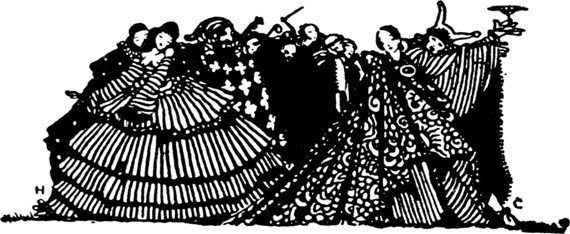
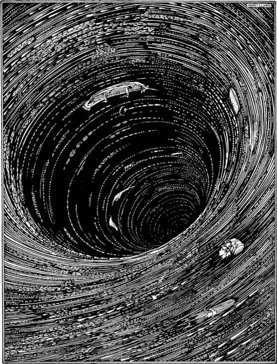
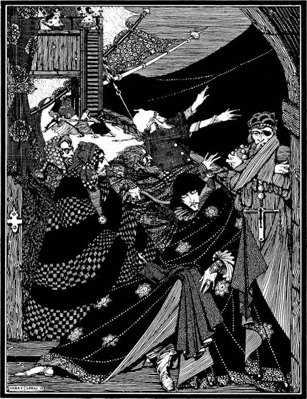
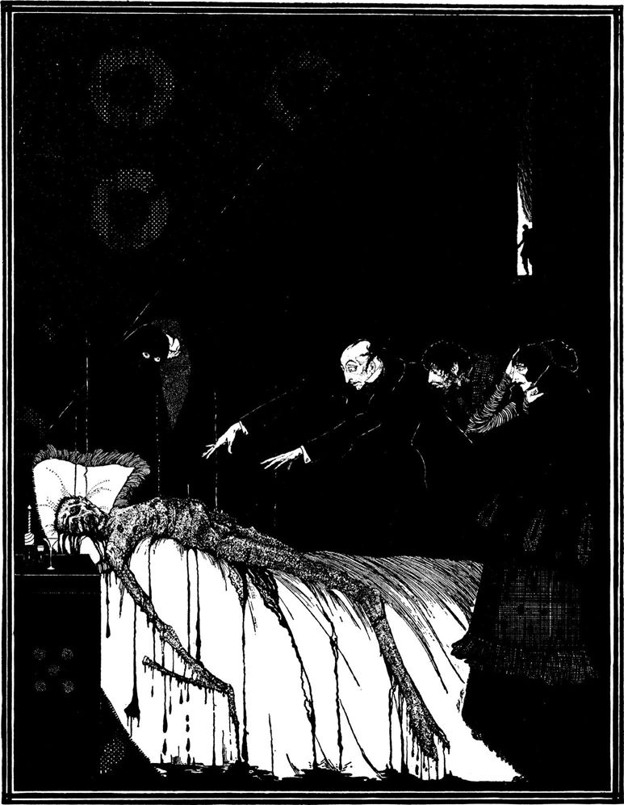

幻想

“爱伦·坡有一个异常鲜明的特征，就是想像力。”
——陀思妥耶夫斯基
莫斯肯漩涡沉浮记
神造自然之道犹如天道，非同于吾辈制作之道；故自然之博大、幽眇及神秘，绝非吾辈制作之模型所能比拟，自然之深邃远胜德谟克利特之井。
——约瑟夫·格兰维尔
我们当时登上了最高的巉崖之顶。那位老人一时间似乎累得说不出话来。
“不久前，”他终于说道，“我还能像我小儿子一样利索地领你走这条路；可大约3年前我有过一次世人从未有过的经历，或至少是经历者从未有人幸存下来讲述的那种经历。我当时所熬过的那胆战心惊的6小时把我的身子和精神全都弄垮了。你以为我是个年迈的老人，可我不是。就是那不到一天的工夫使得我黑发变成了白发，手脚没有了力气，神经也衰弱了，结果现在稍一使劲就浑身发抖，看见影子就感到害怕。你知道吗，我现在从这小小的悬崖往下看都有点头昏眼花？”
这“小小的悬崖”，他刚才还那么漫不经心地躺在悬崖边上休息，以至于他身体的重心几乎是挂在崖壁上，仅凭他一只胳臂肘支撑着又陡又滑的岩边以保持身子不往下掉。这“小小的悬崖”是一道由乌黑发亮的岩石构成的高峻陡峭的绝壁，从我们脚下的巉岩丛中突兀而起，大约有1500或1600英尺高。说什么我也不敢到离悬崖边五六码的地方去。实际上，看见我那位同伴躺在那么危险的地方我都紧张得要命，以至于我挺直身子趴在地上还紧紧抓住身旁的灌木，甚至不敢抬眼望一望天空。与此同时，我总没法驱除心中的一个念头：这山崖会被一阵狂风连根吹倒。过了好一阵我才说服了自己，鼓足勇气坐起来并朝远处眺望。
“你一定得克服这些幻觉，”那位向导说，“因为我领你上这儿来就是要让你尽可能地看看我刚才所说的那件事发生的地点，以便我给你讲那番经历时那地方就在你眼皮底下。”
“我们现在，”他以他独特的格外详细的讲述方式继续道，“我们现在是在挪威海边，在北纬68度，在诺尔兰这个大郡，在荒凉的罗弗敦地区。我们脚下这座山叫赫尔辛根，也称云山。请把身子抬高一点儿，要是头晕就抓住草丛。就这样，朝远处看，越过咱们身下的那条雾带，看远方大海。”
我头昏眼花地极目远望，但见浩浩汤汤一片汪洋。海水冥冥如墨，使我一下想起了那位努比亚地理学家所记述的黑暗之海洋[92]。眼前景象之凄迷超越了人类的想象。在我们目力所及的左右两方，各自伸延着一线阴森森的黑崖，犹如这世界的两道围墙，咆哮不止的波涛高卷起狰狞的白浪，不断地拍击黑崖，使阴森的黑崖更显幽暗。就在我们置身于其巅峰的那个岬角对面，在海上大约五六英里远之处，有一个看上去很荒凉的小岛；更确切地说，是透过小岛周围的万顷波澜，那小岛的位置依稀可辨。靠近陆地2英里处又矗起一个更小的岛屿，荒坡濯濯，怪石嶙峋，周围环绕着犬牙交错的黑礁。
较远那座荒岛与陆地之间的这片海面有一种非常奇异的现象。虽然当时有一阵疾风正从大海刮向陆地，猛烈的疾风使远方海面上的一条双桅船收帆停下后仍不住颠簸，整个船身还不时被巨浪覆盖，但这片海面上却看不见通常的波涛，只有从逆风或顺风的各个方向流来的海水十分短促地交叉涌动。除了紧贴岩石的地方，海面上几乎没有泡沫。
“较远的那座岛，”老人继续道，“挪威人管它叫浮格岛。中途那座是莫斯肯岛。往北1英里处是阿姆巴伦岛。再过去依次是伊弗力森岛、霍伊荷尔摩岛、基尔德尔摩岛、苏尔文岛和巴克哥尔摩岛。对面远处(在莫斯肯岛和浮格岛之间)是奥特荷尔摩岛、弗里门岛、桑德弗利森岛和斯卡荷尔摩岛。这些名称便是这些小岛准确的叫法，但至于人们为什么认为非得这么叫，那就不是你我能弄懂的了。你现在听见什么吗？你看见海水有什么变化吗？”
我们当时在赫尔辛根山顶已待了大约10分钟，我们是从罗弗敦内地一侧爬上山的，所以直到攀上绝顶大海才骤然呈现在我们眼前。老人说话之际，我已经听到了一种越来越响的声音，就像美洲大草原上一大群野牛的悲鸣。与此同时我还目睹了水手们所说的大海说变就变的性格，我们脚下那片刚才还有风无浪的海水眨眼之间变成了一股滚滚向东的海流。就在我凝望之时，那股海流获得了一种异乎寻常的速度。那速度每分每秒都在增大，海流的势头每分每秒都在增猛。不出5分钟，从海岸远至浮格岛的整个海面都变得浊浪滔天，怒涛澎湃；但海水最为汹涌的地方则在莫斯肯岛与海岸之间。那里的海水分裂成上千股相互冲撞的水流，突然间陷入了疯狂的骚动，跌宕起伏，滚滚沸腾，嘶嘶呼啸，旋转成无数巨大的漩涡，所有的漩涡都以水在飞流直下时才有的速度转动着冲向东面。
几分钟之后，那场景又发生了一个急剧的变化。海平面变得多少比刚才平静，那些漩涡也一个接一个消失，但在刚才看不见泡沫的海面，现在泛起了大条大条带状的泡沫。泡沫带逐渐朝远处蔓延，最后终于连成一线，又开始呈现出漩涡状的旋转运动，仿佛要形成另一个更大的漩涡。突然，真是突如其来，那个大漩涡已清清楚楚地成形，其直径超过了半英里。那漩涡的周围环绕着一条宽宽的闪光的浪带，但却没有一点浪花滑进那个可怕的漏斗。我们的眼睛所能看到的那漏斗的内壁，是一道光滑、闪亮、乌黑的水墙，墙面与水平面大约成45度角，以一种令人眼花缭乱的速度飞快地旋转，并向空中发出一种可怕的声音，一半像悲鸣，一半像咆哮，连气势磅礴的尼亚加拉大瀑布也从不曾向苍天发出过这种哀号。
一时间山崖震颤，岩石晃动。我紧张得又一下趴到地上，紧紧抓住身边稀疏的荒草。
“这，”我最后终于对老人说，“这一定就是著名的梅尔斯特罗姆大漩涡了。”
“有时候人们也这么叫，”他说，“但我们挪威人称它为莫斯肯漩涡，这名字来自海岸和浮格岛之间的莫斯肯岛。”
一般关于这大漩涡的记述都未能使我对眼前所见的景象有任何心理准备。约纳斯·拉穆斯[93]的记述也许是最为详细的，但也丝毫不能使人想象到这番景象的宏伟壮观或惊心动魄，或想象到这种令观者心惊肉跳、惶恐不安的新奇感。我不清楚那位作者是从什么角度和在什么时间观察大漩涡的，但他的观察既不可能是从赫尔辛根山顶，也不可能是在一场暴风期间。然而他的描述中有几段特别详细，我们不妨把它们抄录在这里，尽管要传达对那种奇观异景的感受，这些文字还嫌太苍白无力。
他写道：“莫斯肯岛与罗弗敦海岸之间水深达36至40英寻；但该岛至浮岛(浮格岛)之间水深却浅到船只难以通过的程度，即便在风平浪静的日子，船只也有触礁的危险。当涨潮之时，那股强大的海流以一种疯狂的速度冲过罗弗敦和莫斯肯岛之间；而当它急遽退落时所发出的吼声，连最震耳欲聋最令人害怕的大瀑布也难以相比。那种吼声几海里之外都能听见。那些漩涡或陷阱是那么宽，那么深，船只一旦进入其引力圈就不可避免地被吸入深渊，卷到海底，在乱礁丛中撞得粉碎。而当那片海域平静之时，残骸碎片又重新浮出海面。但只有在无风之日涨落潮之间的间歇，才会有那种平静之时，而且最多只能延续15分钟，接着那海流又渐渐卷土重来。当那股海流最为狂暴且又有暴风雨助威之时，离它四五英里之内都危机四伏。无论小船大船只要稍不留意提防，不等靠拢就会被它卷走。鲸鱼游得太近被吸入涡流的事也常常发生，这时它们那种徒然挣扎、奢望脱身时所发出的叫声非笔墨所能形容。曾有一头白熊试图从罗弗敦海岸游向莫斯肯岛，结果被那股海流吸住卷走，当时它可怕的咆哮声岸上都能听见。枞树和松树巨大的树干一旦被卷入那急流，再浮出水面时一定是遍体鳞伤，仿佛是长了一身硬硬的鬃毛。这清楚地表明海底怪石嶙峋，被卷入的树干只能在乱石丛中来回碰撞。这股海流随潮涨潮落或急或缓，通常每6个小时一起一伏。1645年六旬节的星期日清晨，这股海流的狂暴与喧嚣曾震落沿岸房屋的砖石。”
说到水深，我看不出那个大漩涡附近的深度如何能测定。“40英寻”肯定仅仅是指那股海流靠近莫斯肯岛或罗弗敦海岸那一部分的深度。莫斯肯漩涡之中心肯定是深不可测，而对这一事实的最好证明莫过于站在赫尔辛根山最高的巉崖之顶朝那旋转着的深渊看上一眼，哪怕是斜眼匆匆一瞥。从那悬崖之巅俯瞰那条咆哮的冥河，我忍不住窃笑老实的约纳斯·拉穆斯竟那么天真，居然把鲸鱼白熊的传闻当作难以置信的事件来记载；因为事实上在我看来，即便是这世上最大的战舰，只要一进入那可怕的吸力圈，也只能像飓风中的一片羽毛，顷刻之间便消失得无影无踪。
我曾经读过那些试图说明这种现象的文章。记得当时还觉得其中一些似乎言之有理，现在看来则完全不同，难以令人满意。人们普遍认为这个大漩涡与法罗群岛那三个较小的漩涡一样，“其原因不外乎潮涨潮落时水流之起伏与岩石暗礁构成的分水脊相碰，水流受分水脊限制便如瀑布直落退下，于是水流涌得越高，其退落就越低，结果就自然形成涡流或漩涡，其强大吸力通过模拟实验已为世人所知”。以上见解乃《大英百科全书》之原文[94]。基歇尔[95]等人推测莫斯肯漩涡之涡流中心是一个穿入地球腹部的无底深渊，深渊的出口在某个非常遥远的地方，而有一种多少比较肯定的说法是认为那出口在波的尼亚湾。这种推测本来并无根据，但当我凝视着眼前的漩涡，我的想象力倒十分倾向于同意这种说法；当我对向导提起这个话题，他的回答令我吃了一惊，他说虽然一说起这话题几乎所有挪威人都接受上述观点，但他自己并不同意这种见解。至于前一种见解，他承认自己没有能力去理解。在这一点上我与他不谋而合，因为不管书上说得多么头头是道，可一旦置身于这无底深渊雷鸣般的咆哮声中，你便会觉得书上所言完全莫名其妙，甚至荒唐透顶。
“你现在已好好地看过了这大漩涡，”老人说道，“如果你愿意绕过这巉崖爬到背风的地方，避开这震耳欲聋的咆哮，我将给你讲一段故事，让你相信我对莫斯肯漩涡应该有几分了解。”
我爬到了他所说的地方，他开始讲故事。
“我和我的两位兄弟曾有一条载重70吨的渔船，我们习惯于驾船驶过莫斯肯岛，在靠近浮格岛附近的岛屿间捕鱼。海中凡有漩涡之处都是捕鱼的好地方，只要掌握好时机，再加上有胆量去一试。不过在罗弗敦一带所有渔民之中，只有我们三兄弟常去我告诉你的那些岛屿间捕鱼。通常的渔场在南边很远的地方。那儿随时都能捕到鱼，没有多少危险，所以人们都情愿去那儿。可这边礁石丛中的好去处不仅鱼种名贵，而且捕捞量大，所以我们一天的收获往往比我们那些胆小的同行一个星期所得到的还多。事实上，我们把这营生作为一种玩命的投机，以冒险代替辛劳，以勇气充当资本。
“我们通常把船停在沿这海岸往北大约5英里处的一个小海湾里；遇上好天气，我们就趁着那15分钟平潮赶快驶过莫斯肯漩涡的主水道，远远地在那大漩涡的北边，然后掉头南下直驶奥特荷尔摩岛或桑德弗利森岛附近的停泊地，那儿的涡流不像别处那么急。我们通常在那儿停留到将近第二次平潮，这时我们才满载鱼虾起锚返航。若是没遇上一阵那种能把我们送去又送回的平稳的侧风，那种我们有把握在我们回来之前不会停刮的侧风，那我们绝不会扬帆出海去进行这种冒险，而对风向的预测我们很少出错，6年期间我们因为没风而被迫在那儿抛锚过夜的事只发生过两次，天上一丝风也没有的情况在我们这儿十分少见；还有一次我们不得不在那边渔场上逗留了将近一个星期，差点儿没被饿死，那是因为我们刚到渔场不一会儿就刮起了狂风，狂风使水道怒浪滔天，那狂暴劲儿叫人想都不敢想。不管怎么说，那次我们本该被冲进深海(因为那些漩涡使我们的船旋转得那么厉害，结果连锚都缠住了，我们只得拖着锚随波逐流)，但幸好我们漂进了那些纵横交错的暗流中的一条，今天漂到这儿，明天漂到那儿，最后顺流漂到了弗里门岛背风的一面，在那儿我们侥幸地抛下了锚。
“我们在‘渔场那边’遭遇的艰难，我真是难以向你一言道尽。那是个险恶的地方，即便在好天也不太平，但我们总能设法平安无事地避开莫斯肯漩涡的魔掌。不过也有过吓得我心都提到嗓子眼的时候，那就是我们通过主水道的时间碰巧与平潮时间前后相差那么一分钟左右。有时启航之后才发现风不如我们预测的那么强劲，我们只好缩短我们本来该绕的圈子，这时候那海流就会把船冲得难以控制。当时我哥哥已有一个18岁的儿子，我也有两个健壮的男孩。在刚才说到的那种需要划桨加速的时候，或是在到达渔场后撒网捕鱼的时候，孩子们都可以成为很好的帮手。可不知什么缘故，尽管我们自己就在玩儿命，但却没勇气让孩子们去冒风险，因为那毕竟是一种可怕的危险，而我说这话是千真万确。
“再过上几天，我下面要给你讲的那件事就已经发生3年了。那是18××年7月10日，这一带的人们永远都忘不了那个日子，因为就在那天，这里刮过一场从来没有过的最可怕的飓风。然而在那天上午，实际上一直到下午很晚的时候，天上还一直吹着轻柔而稳定的西南风，头顶上也一直艳阳高照，所以连我们中最老的水手也没料到会骤然变天。
“我们3人(我的两个兄弟和我)在下午两点左右到达那边的岛屿之间，并很快就使鱼舱几乎装满了好鱼，我们都注意到那天捕的鱼比以往任何时候都多。7点整，根据我表上的时间，我们开始满载返航，以便趁平潮之机驶过那涡流的主水道，我们知道下次平潮是在8点。
“我们乘着从右舷一侧吹来的劲风驶上归途，以极快的速度行驶了好一阵，压根儿没想到有什么危险，因为事实上我们看不出任何值得担忧的迹象。可突然之间，从赫尔辛根山方向吹来的一阵风使我们吃了一惊。这种情况异乎寻常，我们以前从未遇过，我不由得感到了一点不安，虽然我不清楚不安的缘由。我们让船顺着那阵风，但由于流急涡旋，船却完全没法前进；我正想建议把船驶回刚才停泊的地方，这时我们朝后一望，但见整个天边已被一种正急速升腾的黄铜色的怪云笼罩。
“与此同时，刚才阻挠我们的那阵风也渐渐消失，我们完全没有了前行所需的风力，一时间只能随波逐流。可这种情况并未延续多久，甚至不够我们细想一下当时的处境。不出一分钟，风暴降临我们头上。不出两分钟，天空布满了乌云。乌云遮顶加上水雾弥漫，我们周围顿时变得漆黑一团，以致同在一条船上也彼此看不见对方。
“要描述当时那场飓风可真是痴心妄想。整个挪威最老的水手也不曾有过那种经历。我们趁那飓风完全刮来之前赶紧收起了风帆；可第一阵风头就把我们的两根桅杆都刮倒在船外，仿佛它们早就被锯断了似的。主桅把我弟弟也带进了海里，因为他为安全起见把自己绑在了桅杆上。
“我们的船是海上航行的船只中最轻巧的一种。它有一层十分平滑的甲板，只在靠近船头的地方有一个小小的舱口，而我们一直习惯于在驶越大漩涡之前钉上扣板将其密封，以防止汹涌的海水灌入。要不是采取了那样的措施，恐怕我们早就沉到了海底，因为有一阵子我们完全被埋在水下。我说不上我哥哥是如何逃过那灭顶之灾的，因为我根本没机会去弄明白。至于我自己，当时我一放下前帆就趴倒在甲板，用双脚紧紧抵住船头狭窄的舷边，双手则死死抓住前桅杆下一个环端螺栓。我那样做仅仅是由于本能的驱使，那毫无疑问也是我当时最好的选择，因为我慌得没工夫细想。
“正如我刚才所说，有一阵子我们完全被埋在水下，其间我一直屏住呼吸，并紧紧抓住那个螺栓。待我实在不能再坚持时我才跪起身来，但抓螺栓的手一点也没放松，因此我保持了神志清醒。接着我们的小船晃了一阵，就像狗从水中出来时晃动身子，这样多少总算从水下钻出了水面。我正试图驱散刚向我袭来的一阵恍惚，以便定下神来考虑对策，这时我觉得有人抓住了我一条胳臂。那是我哥哥，我高兴得心里直跳，因为我刚才以为他肯定已掉下船去，可我的高兴转眼之间就变成了恐惧，因为他把嘴凑近我的耳朵，惊恐地喊叫出了那个名字：‘莫斯肯漩涡!’
“没有人会知道我当时是什么心情。我浑身上下直打哆嗦，就像发一场最厉害的疟疾。我清楚他嚷出的那个名称所包含的意义，我知道他想让我明白的是什么。随着那阵驱赶我们的狂风，小船正飞速驶向莫斯肯漩涡，我们已毫无希望得到拯救!
“你知道我们每次穿过这漩涡的主水道，总是远远地从漩涡北边绕一个大圈，即便在最好的天气也不例外，然后还得小心翼翼地等待平潮，可现在我们却直端端地被驱向那大漩涡本身，并且是在那样的一场飓风之中!‘自然，’我暗想，‘我们到达漩涡时会正赶上平潮。这样我们也许还有一线生机。’但紧接着我就诅咒自己是个十足的白痴，居然会想到从大漩涡生还的希望。我知道得非常清楚，就算我们是一条比有90门大炮的战列舰还大10倍的船，这一次也是在劫难逃。
“这时风暴的头一阵狂怒已经减弱，或者是因为我们顺风行驶而觉得它不如刚才凶狂，但不管怎样，刚才被狂风镇服、压平、只翻涌着泡沫的海面现在卷起了一排排山一样的巨浪。天上也起了一种奇异的变化。虽说周围仍然是一片漆黑，可当顶却骤然裂开一个圆孔，露出一圈晴朗的天空，我所见过的最清澈明朗的天空，呈一种深沉而晶莹的湛蓝。透过那孔蓝天涌出一轮圆月，圆月闪射着一种我从不知月亮有过的光华。月光把我们周围的一切照得清清楚楚。可是，天哪，它照亮的是一番什么景象!
“我当时试了一两次要同我哥哥说话，可我弄不明白是怎么回事，震耳欲聋的喧嚣声越来越猛，我对着他的耳朵扯开嗓门喊叫也没法使他听到我的声音。不一会儿他朝我摇了摇头。面如死灰地竖起一根手指，仿佛是说‘听’!
“开始我还弄不懂他的意思，但紧接着一个可怕的念头倏然掠过脑际。我从表袋里掏出怀表。指针没有走动。我借着月光看了一眼表面，不禁哇地一下哭出声来，随之把怀表扔进了大海。表在7点钟时就已经停走!我们已经错过了平潮期，此时的大漩涡正在狂怒之中!
“当一条建造精良、结构匀称，且载货不多的船顺风而行之时，被强风掀起的海浪似乎总是从它的船底一滑而过，这对不懂航海的人来说显得非常奇怪，可用海上的行话来说，那就叫骑浪。对啦，在此之前我们就一直骑浪而行；但不久一个巨大的浪头紧紧贴住了我们的船底，并随着它的涌起把我们托了起来，向上，向上，仿佛把我们托到了空中。我真不敢相信浪头能涌得那么高。然后伴随着一顿、一滑、一坠，我们的船又猛然往下跌落，跌得我头昏眼花，直感恶心，就像是在梦中从山顶上往下坠落。但当我们被托起之时，我趁机朝四下扫了一眼，而那一眼就完全足够了。我一眼就看清了我们的准确位置。莫斯肯大漩涡就在我们正前方大约四分之一英里处，但它已不像平日所见的莫斯肯涡流，而像你刚才所见到的水车沟一样的漩涡。如果我当时不知道我们身在何处，不知道我们正面临什么，那我一定完全认不出那地方。事实上那一眼吓得我当即闭上了眼睛，上下眼皮像抽筋似的自己合在了一起。
“其后可能还不到两分钟，我们突然觉得周围的波涛平息了下来，包围着小船的是一片泡沫。接着小船猛地朝左舷方向转了个直角，然后像一道闪电朝这个新的方向猛冲。与此同时，大海的咆哮完全被一种尖厉的呼啸声吞没。要知道那种呼啸声，你可以想象几千艘汽船的排气管同时放气的声音。我们当时是在那条总是环绕着大漩涡的浪带上。当然，我以为下一个时刻马上就会把我们抛进那个无底深渊。由于我们的船以惊人的速度在飞驶，我们只能朦朦胧胧地看见下面。可小船并不像要沉入水中，而是像一个气泡滑动在水的表面。船的右舷靠着漩涡，左舷方则涌起我们刚离开的那片汪洋。此时那片汪洋像一道扭动着的巨墙，横在我们与地平线之间。
“说来也怪，真正到了那漩涡的边上，我反倒比刚才靠近时平静了许多。一旦横下心来听天由命，先前使我丧魂失魄的那种恐惧倒消除了一大半。我想当时使我平静下来的正是绝望。
“这听起来也许像在吹牛，但我告诉你的全是实话。我开始想到以这样的方式去死是多么的壮丽，想到面对上帝的力量如此叹为观止的展现，我竟然去考虑自己微不足道的生命，这是多么可鄙，多么愚蠢。我确信，当时这种想法一闪过我脑子，我的脸顿时羞得通红。过了一会儿，我终于被一种想探究那个大漩涡的强烈的好奇心所迷住。我确实感到了一种想去勘测它深度的欲望，即使为此而牺牲生命也在所不惜，可我最大的悲伤就是我永远也不可能把我即将看到的秘密告诉我岸上那些老朋友。毫无疑问，这些想法是一个面临绝境的人脑子里的胡思乱想。后来我常想，当时也许是小船绕漩涡急速旋转使得我有点儿神志恍惚了。
“使我恢复镇静还有另一个原因；那就是风停了，风已吹不到我们当时所处的位置，因为正如你现在亲眼所见，那圈浪带比大海的一般水位低得多，当时海面高高地耸在我们头顶，像一道巍峨的黑色山梁。假若你从未在海上经历过风暴，那你就没法想象风急浪高在人心中造成的那种慌乱。风浪让你看不清，听不见，透不过气，让你没有力气行动也没有精力思考。可我们当时基本上摆脱了那些烦恼，就像狱中被宣判了死刑的囚徒被允许稍稍放纵一下，而在宣判之前则禁止他们乱说乱动。
“说不清我们在那条浪带上转了多少圈。我们就那样绕着圈子急速地漂了大约一个小时，说是漂还不如说是飞，并渐渐地移到了浪带中间，然后又一点一点向浪带可怕的内缘靠近。这期间我一直没松开那个螺栓。我哥哥则在船尾抓住一只很大的空水桶，那水桶一直牢固地绑在船尾捕鱼笼下面，飓风头一阵袭击我们时甲板上唯一没被刮下海的就是那只大桶。就在我们贴近那漩涡边缘之时，他突然丢下那只桶来抓环端螺栓，由于极度的恐惧，他力图强迫我松手。因为那个环并不大，没法容我们兄弟俩同时抓牢。当我看见他这种企图，我感到了前所未有的悲伤，尽管我知道他这样做时已神经错乱，极度的恐怖已使他癫狂。不过我并不想同他争那个螺栓。我认为我俩谁抓住它结果都不会有什么不同；于是我让他抓住那个环，自己则去船尾抓住那个桶。这样做并不太难；因为小船旋转得足够平稳，船头船尾在同一水平面，只是随着那漩涡巨大的摆荡，前后有些倾斜。我勉强在新位置站稳脚跟，船就猛然向右侧一歪，头朝下冲进了那个漩涡。我匆匆向上帝祷告了两句，心想这下一切都完了。

“当我感觉到下坠时那种恶心之时，我早已本能地抓紧木桶并闭上了眼睛。有好几秒钟我一直不敢睁眼，我在等待那最后的毁灭，同时又纳闷怎么还没掉到水底做垂死的挣扎。可时间一刻一刻地过去。我仍然活着。下坠的感觉消逝了，小船的运动似乎又和刚才在浪带上旋转时一样，只是现在船身更为倾斜。我壮着胆子睁开眼再看一看那番情景。
“我永远也忘不了我睁眼环顾时那种交织着敬畏、恐惧和赞美的心情。小船仿佛被施了魔法，看起来就像正悬挂在一个又大又深的漏斗内壁表面上，而若不是那光滑的内壁正以惊人的速度在旋转，若不是它正闪射着亮晶晶的幽光，那水的表面说不定会被误认为是光滑的乌木。原来那轮皓月正从我刚才描述过的那个乌云当中的圆孔把充溢的金光倾泻进这个巨大的漩涡，光线顺着乌黑的涡壁，照向深不可测的涡底。
“一开始我慌乱得根本无法细看，蓦然映入眼中的就是这幅可怕而壮美的奇观。但当我稍稍回过神来，我的目光便本能地朝下望去。由于小船是悬挂在涡壁倾斜的表面，我朝下方看倒能够一览无余。小船现在非常平稳，那就是说它的甲板与水面完全平行，但由于水面以45度多一点的角度倾斜，小船看起来几乎要倾覆。然而我不能不注意到我几乎并不比在绝对水平时费劲就能抓紧水桶、固定身体。现在想来，那是因为我们旋转的速度。
“月光似乎一直照向那深深漩涡的涡底；可我仍然什么也看不清楚，因为有一层厚厚的雾包裹着一切，浓雾上方悬着一道瑰丽的彩虹，犹如穆斯林所说的那座狭窄而晃悠的小桥，那条今生与来世之间唯一的通路。这层浓雾，或说水沫，无疑是那个漩涡巨大的水壁在涡底交汇相撞时形成的，可对水雾中发出的那种声震天宇的呼啸，我可不敢妄加形容。
“我们刚才从那条涌着泡沫的浪带上朝漩涡里的猛然一坠，已经使我们沿着倾斜的水壁向下滑了一大段距离，但其后我们下降的速度与刚才完全不成比例。我们一圈又一圈地随着涡壁旋转，但那种旋转并非匀速运动，而是一种令人头昏目眩的摆动，有时一摆之间我们只滑行几百英尺，而有时一摆之间我们却几乎绕涡壁转了一圈。我们每转一圈所下降的距离并不长，但也足以被明显地感知。
“环顾承载着我们的那道乌黑的茫茫水壁，我发现漩涡里卷着的并非仅仅是我们这条小船。在我们的上方和下面都可以看到船只的残骸、房屋的梁柱和各种树干，另外还有许多较小的东西，诸如家具、破箱、木桶和木板等等。我已经给你讲过那种使我消除了恐惧的反常的好奇心。现在当我离可怕的死亡越来越近之时，我那种好奇心似乎也越来越强烈。我怀着一种不可思议的兴趣开始观察那许许多多随我们一道漂浮的物体。我肯定是神经错乱了，因为我居然津津有味地去推测它们坠入那水沫高溅的涡底的相对速度。有一次我竟发现自己说出声来，‘这下肯定该轮到那棵枞树栽进深渊，无影无踪了’，可随之我就失望地看到一条荷兰商船的残骸超过那棵枞树，抢先栽进了涡底。我接着又进行了几次类似的猜测，结果没有一次正确，这一事实，我每次都猜错这一事实，终于引得我思潮起伏，以致我四肢又开始发抖，心又开始怦怦乱跳。
“使我发抖心跳的不是一种新的恐惧，而是一种令人激动的希望。这希望一半产生于记忆，一半产生于当时的观察。我想起了那些被莫斯肯漩涡卷入又抛出，然后漂散在罗弗敦沿岸的各种各样的东西。那些东西的绝大部分都破碎得不成样子，被撞得千疮百孔，被擦得遍体鳞伤，仿佛是表面上被粘了一层碎片，但我也清楚地记得有些东西完全没有变形走样。当时我只能这样来解释这种差异，我认为只有那些破碎得不成样子的东西才被完全卷到了涡底，而那些未变形的东西要么是涨潮末期才被卷进漩涡，要么是被卷进后因某种原因而下降得太慢，结果没等它们到达涡底潮势就开始变化，或是开始退潮，这就视情况而定了。我认为无论是哪种情况，这些东西都有可能被重新旋上海面，而不遭受那些被卷入早或沉得快的东西所遭受的厄运。我还得出了三个重要的观察结论：其一，一般来说物体越大下降越快；其二，两个大小相等的物体，一个是球形，另一个是其他任何形状，下降速度快的是球形物；其三，两个大小相等的物体，一个是圆柱形，另一个是其他任何形状，下降速度慢的是圆柱形物体。自从逃脱那场劫难以来，我已经好几次同这个地区的一名老教师谈起这个话题，我就是从他那儿学会了使用‘圆柱形’和‘球形’这些字眼。他曾跟我解释(虽然我已经忘了他解释的内容)为什么我所看到的实际上就是各种不同漂浮物的必然结果，他还向我示范圆柱形浮体在漩涡中是如何比其他任何形状的同体积浮体更能抵消漩涡的吸力，因而也就更难被吸入涡底。[96]
“当时还有一种惊人的情况有力地证明了我那些观察结论，并使得我迫不及待地跃跃欲试。那种情况就是当我们一圈一圈地旋转时，我们超过了不少诸如大木桶或残桁断桅之类的东西，我最初睁开眼看漩涡里那番奇观时，有许多那样的东西和我们在同一水平线上，可后来它们却留在了我们上面，似乎比原来的位置并没有下降多少。
“我不再犹豫。我决定把自己牢牢地绑在我正抓住的那个大木桶上，然后割断把它固定在船尾的绳子，让它和我一道离船入水。我用手势引起我哥哥的注意，指给他看漂浮在我们船边的一些大木桶，千方百计让他明白我打算做什么。我最后认为他已经明白了我的意图，但不管他明白与否，他只是绝望地向我摇头，不肯离开他紧紧抓住的那个螺栓。我当时不可能强迫他离船，而且情况紧急，刻不容缓；于是我只好狠狠心让他去听天由命，径自用固定木桶的绳索把自己绑在桶上，并毫不犹豫地投入水中。
“结果与我所希望的完全一样。因为现在是我在给你讲这个故事，因为你已经看到我的确劫后余生，因为你已经知道了我死里逃生的方法，因而也肯定能料到我接下去会讲些什么，所以我要尽快地讲完我的故事。大约在我离船后一个小时，早已远远降到我下面的那条船突然飞速地一连转了三四圈，然后带着我心爱的哥哥，一头扎进了涡底那水沫四溅的深渊，一去不返。而绑着我的那只大木桶只从我跳船入水的位置朝涡底下降了一半多一点儿的距离，这时漩涡的情形起了巨大的变化。涡壁的倾斜度变得越来越小。旋转的速度变得越来越慢。水沫和彩虹渐渐消失，涡底似乎开始徐徐上升。当我发现自己又升回海面之时，天已转晴，风已减弱，那轮灿灿明月正垂悬西天，我就在能望见罗弗敦海岸的地方，就在刚才莫斯肯漩涡的涡洞之上。当时是平潮期，但飓风的余威仍然使海面卷起小山般的波涛。我猛然被推进了大漩涡的水道，在几分钟内就顺着海岸被冲到了渔民们捕鱼的‘渔场’。一条渔船把我打捞上来，当时我已累得精疲力竭，恐怖的记忆(既然危险已过去)使我说不出话来。救我上船的那些人都是我的老伙计和经常见面的朋友，可他们居然仅仅把我当作一名死里逃生的游客。我前一天还乌黑发亮的头发当时就已经白成了你现在所看见的这个样子。他们还说我脸上的神情都完全变了。我给他们讲了我那番经历。他们并不相信。现在我讲给你听，可我并不指望你会比那些快活的罗弗敦渔民更相信我的故事。”
瓶中手稿
人之将死，无密可瞒。
——基诺《阿蒂斯》
关于故国和家人我没有多少话可说。岁月的无情与漫长早已使我别离了故土，疏远了亲人。世袭的家产供我受了不同寻常的教育，而我善思好虑的天性则使我能把早年辛勤积累的知识加以分门别类。在所有知识中，德国伦理学家们的著作曾给予我最大的乐趣；这并非是因为我对他们的雄辩狂盲目崇拜，而是因为我严谨的思维习惯使我能轻而易举地发现他们的谬误。天赋之不足使我常常受到谴责，想象力之贫乏历来是我的耻辱，而植根于我观念中的怀疑论则任何时候都使得我声名狼藉。实际上，我担心我对物理学的浓厚兴趣已经使我的脑子里充满了流行于当今时代的一种错误思想，我是说现在的人总习惯认为任何偶发事件都与那门科学的原理有关，甚至包括那些与之风马牛不相及的事件。大体上说，这世上没有人比我更不容易被迷信的鬼火引离真实之领域。我一直认为应该这样来一段开场白，以免下边这个令人难以置信而我却非讲不可的故事被人视为异想天开的胡言乱语，而不被看作是一位从来不会想象的人的亲身经历。
在异国他乡漂泊多年之后，我又于18××年在富饶且人口稠密的爪哇岛登上了从巴达维亚港驶往巽他群岛的航船。我这次旅行只有一个原因，那就是我感到了一种像是魔鬼附身似的心神不定。
我们乘坐的是一条铜板包底、约400吨重的漂亮帆船，是用马拉巴的柚木在孟买建造的。船上装载的是拉克代夫群岛出产的皮棉和油料，此外还有些椰壳纤维、椰子糖、奶油、椰子和几箱鸦片。货物堆放得马虎，所以船身老是摇晃。
我们乘着一阵微风扬帆出海，许多天来一直沿着爪哇岛东海岸行驶，除了偶尔遇上几条从我们要去的巽他群岛驶来的双桅船外，一路上没有什么事可排遣旅途的寂寞。
一天傍晚，我靠在船尾栏杆上观看西北方一朵非常奇特的孤云。它之所以引起我的注意，一是因为它的颜色，二是因为自我们离开巴达维亚以来，这还是第一次见到云彩。我全神贯注地望着它直到夕阳西沉，这时那朵云突然朝东西两边扩展，在水天相接处形成一条窄窄的烟带，看上去宛若长长的一溜浅滩。我的注意力很快又被暗红色的月亮和奇异的海景所吸引。此时的大海正瞬息万变，海水似乎变得比平时更透明。虽然我能清楚地看见海底，但抛下铅锤一测，方知船下的水深竟有15英寻。这时空气也变得酷热难耐，充满了一种仿佛从烧红的铁块上腾起的热浪。随着夜晚的降临，微风渐渐平息，周围是一片难以想象的寂静。舵楼甲板上蜡烛的火苗毫无跳动的迹象，两指拈一根头发丝也看不出它会飘拂。然而，由于船长说他看不出任何危险的征候，由于我们的船正渐渐漂向海岸，所以他下令收帆抛锚。没派人值班守夜，那些多半是马来人的水手也全都满不在乎地摊开身子在甲板上睡下。我回到舱房，心中不无一种大祸临头的预感。实际上每一种征候都使我有充分的理由判定一场热带风暴即将来临。我刚才把我的担忧告诉了船长，可他对我的话却置若罔闻，甚至不屑给我一个回答便拂袖而去。但这份担忧却使我没法入睡，半夜时分我又起身去甲板。刚踏上后甲板扶梯的最上一级，一阵巨大的嗡嗡声便让我心惊胆战，那声音听起来像是水车轮子在飞速转动，而我还来不及弄清是怎么回事，就觉得整个船身在剧烈颤抖。紧接着，一排巨浪劈头盖脸向我们砸来，把船身几乎翻了个底朝天，然后从船头到船尾席卷过整个甲板。
事后看来，在很大程度上正是那阵来势凶猛的狂风使那条船没有立刻毁于一旦。因为，虽说整条船都被淹没，但由于桅杆全被那阵风折断落到了海里，船不一会儿就挣扎着浮出了水面，在排山倒海的风暴中颠簸了一阵，最后终于恢复了平稳。
我说不清到底是靠什么奇迹，我才幸免于那场灭顶之灾。当时我被那排巨浪打得昏头昏脑，待我回过神来，我发现自己被卡在船尾龙骨与舵之间。当我挣扎着站起身来，惊魂未定地四下张望，我首先想到的就是刚才我们被滚滚巨浪席卷的情景，而最令人可怕最难以想象的是那个飞溅着泡沫把我们吞噬的巨大漩涡。过了一会儿，我听见一位瑞典老头的声音，他是在我们正要离港时登上这条船的。我用尽力气朝他呼喊，他很快就踉踉跄跄地来到了船尾。我俩不久就发现，我俩是这场灾难中仅有的幸存者。甲板上的其他人全都被卷进了大海，而船长和他的副手们也肯定在睡梦中死去，因为船舱里早已灌满了水。没有援助，我俩不能指望能使这条船摆脱困境，而由于一开始我俩都以为船随时都会沉没，所以也没想到采取什么措施。当然，我们的锚链早在第一阵狂风袭来时就像细绳一样给刮断了，不然这条船早已倾覆。现在船正随波逐流飞速地漂动，阵阵涌过甲板的海浪冲刷着我俩。船后部的骨架早已支离破碎，实际上整条船已是百孔千疮；但我们惊喜地发现，几台水泵都还能启动，压舱物也基本没有移位。风暴的前锋已经过去，接下来的疾风并没有多大危险，但我们仍忧心忡忡地希望风浪完全平息；因为我们相信，既然船已破成这副模样，那随风而起的大浪将使我们不可避免地葬身鱼腹。不过，我们这种非常合乎情理的担忧看来不会马上变为现实。因为一连5天5夜(其间我们仅凭好不容易才从船头水手舱中弄来的一点椰子糖充饥)这破船一直顺着一阵虽不及第一场暴风那么猛烈但却是我平生所见的最可怕的疾风，以一种难以估计的速度飞一般地漂行。开始4天我们的航向没多大变化，一直是东南偏南正朝着新荷兰[97]海岸的方向。到了第5天，虽说风向已经渐渐偏北，但寒冷却令人难以忍受。一轮昏黄的太阳露出水平线，只往上爬了几英尺高，没有放射出光芒。天上不见一丝云彩，然而风力却有增无减，一阵接一阵地猛吹。在我们估计的中午时分，那轮太阳又攫住了我们的注意力。它依然没放射出我们通常称作的光芒，而只有一团朦朦胧胧没有热辐射的光晕，仿佛它所有的光都被偏振过了。就在它将沉入茫茫大海之前，那团光晕的中间部分却不翼而飞，好像是被某种神奇的力量一下扑灭。最后只剩下孤零零一个黯淡的银圈，一头扎入深不可测的海洋。
我们徒然地等待第6天出现。对我来说，那一天尚未到来；就瑞典老人而言，那一天压根儿没来过。从此我俩就陷入了冥冥黑暗。离船20步开外的东西都没法看清。漫漫长夜一直笼罩着我们，我们在热带司空见惯的海面磷光也划不破这种黑暗。我们还注意到，虽然暴风仍势头不减地继续怒号，但船边却不见了那种一直伴随着我们的惊涛骇浪。四周是一片恐怖、一片阴森、一片要令人窒息的黑暗。迷信的恐惧悄悄爬进瑞典老人的心头，我胸中也在暗暗诧异。我们不再关心这条破得不能再破的船，只是尽可能地抱紧后桅残杆，痛苦地窥视着冥冥大海。我们没有办法计算时间，也猜不出究竟在什么位置。但我俩心里都清楚，我们已经向南漂到了任何航海家都未曾到过的海域，同时我俩都惊奇为何没碰上照理说应该碰上的冰山。现在每时每刻都可能是我俩的死期，每一个山一般的巨浪都可能把我们淹没。浪潮的起伏超越了我的任何想象，而我们没立即葬身海底倒真是个奇迹。瑞典老头说船上货物很轻，并提醒说这条船本来质地优良，但我却不能不感到希望已彻底失去，再没有什么能延缓那即将来临的死亡，并绝望地为死亡的来临做好了准备，因为这破船每往前漂行一海里，那冥冥大海可怕的汹涌就增加一分。我们时而被抛上比飞翔的信天翁还高的浪尖，被吓得透不过气来，时而又被急速地扔进深渊似的波谷，被摔得头晕目眩；波谷里空气凝滞，没有声音惊扰海怪的美梦。
我们此刻正掉进一个那样的波谷，这时瑞典老人的一阵惊呼划破了黑暗。“看!看!”他的声音尖得刺耳，“天啊!看!快看!”当他惊呼之时，我已感觉到一团朦朦胧胧的红光倾泻在我们掉进的那个深渊的顶端边缘，并把一片光影反射到我们的甲板上。我抬头一看，顿时惊得血液都停止了流动。直挺挺在我们头顶一个可怕的高度，在一座险峻的浪山陡峭的边缘，正漂浮着一艘也许有4000吨重的巨轮。虽然它正被一个比它的船身高出100倍的浪峰托起，但看上去它比任何一艘战舰或东印度洋上的大商船都大。它巨大的船身一片乌黑，船体上通常的雕刻图案也没减轻那种色调。从它敞开的炮门露出一排黄铜大炮，锃亮的炮身反射着无数战灯的光亮，那些用绳索固定的战灯正摇曳不定。但使我们更惊更怕的是，那条船竟不顾超乎自然的巨浪和肆无忌惮的飓风，依旧张着它的风帆。我们开始只看见它的船头，因为它刚从那幽暗恐怖的漩涡底被举向高处，并在那可怕的浪尖上滞留了片刻，仿佛是在为自己的高高在上而出神，但紧接着，它就摇摇晃晃、令人心惊肉跳地直往下坠。
不知怎么回事，我的心在这关键时刻突然恢复了镇静。我摇摇晃晃地尽可能退到船的最后部，毫无恐惧地等着毁灭的一刻来临。我们的船终于停止了挣扎，船头开始沉入水里，因此坠下的大船撞上了它沉入水中的部分，随之而来的必然结果就是，一股不可抗拒的力量把我抛到了大船上的一堆绳索中。
就在我跌入绳堆之际，那条大船已掉转船头顺着风向驶离了那个深渊的边缘。由于接下来的一阵混乱，我没有引起水手们的注意。我很容易就悄悄溜到了中部舱口，舱门半开着，我很快就瞅准一个机会躲进了这个避难所。我说不清自己为何要躲藏。也许第一眼看见这船上那些水手时心中所产生的一种模糊的畏惧感就是我想躲起来的原因。我可不愿轻易相信这伙人，因为刚才对他们的匆匆一瞥就使我隐隐约约感到一些新奇、怀疑和不安。所以我想最好还是在这个避难所里替自己弄一个藏身之处。于是我掀开了一小块活动甲板，以便能随时藏身于巨大的船骨之间。
我刚刚勉强弄好我的藏身之处，就听见船舱里传来一阵脚步声，迫使我对藏身处马上加以利用。一个人摇摇晃晃走过我藏身的地方。我看不见他的脸，但却有机会打量他的全身，看上去他显然已经年老体衰。岁月的负担使他的双腿步履蹒跚，时间的重压使他的全身颤颤巍巍。他一边用一种我听不懂的语言断断续续地低声咕哝，一边在角落里一堆式样古怪的仪器和遭虫蛀的海图中搜寻什么。他的举止既显示出老人的乖戾又透露出天神的威严。他最后终于上了甲板，而我再没有见过他。
一种莫可名状的感情占据了我的心灵。那是一种不容分析、早年的学识不足以解释，而未来本身恐怕也给不出答案的感情。对于一个我这种性质的头脑，连未来也想不出真是一种不幸。我将不再(我知道我将不再)满足于我的思维能力。不过眼下思维的模糊也不足为怪，因为引起思维的原因是那么新奇。一种新的感觉——一种全新的感觉又钻进我的心灵。
我踏上这条可怕的大船已经很久了，我想我的命运之光正在聚向焦点。这些不可思议的人哟!沉溺于一种我无法窥视的冥想之中，经过我身边却对我视而不见。我这样藏匿完全是愚蠢之举，因为那些人压根儿不会看见。刚才我就直端端地从大副眼皮底下走过，而不久前我曾闯入船长的卧舱，拿回纸笔，并已写下这些文字。我会经常地坚持写这日记，当然，我也许没有机会亲手将这日记公诸世人，但我绝不会放弃努力。到最后关头，我会把日记手稿封进瓶里，抛入海中。
一件小事的发生使我开始了新的思索。难道这种事真是鬼使神差？我曾冒险登上甲板，悄悄钻进一条小艇，躺在一堆索梯和旧帆之中，我一边在寻思自己命运的奇特，一边却不知不觉地用一柄柏油刷往身边整整齐齐地叠在一只桶上的帆布上涂抹。现在那张翼帆已被挂上桅杆，而我无意之间的信手涂鸦展开后竟是“发现”这两个大字。
我最近已把这艘大船的构造仔细观察了一番。虽说船上武器装备完善，但我并不认为这是一艘战舰。它的船形、索具和一般装备全都否定了这种猜测。然而，我虽能轻易地看出它不是一艘战舰，但恐怕却说不出它是条什么船。我不知道这是怎么回事，但每当我看见它奇特的船形、怪异的桅桁、过大的风帆、简朴的舰首和那颇具古风的船尾，我心里总会掠过一种似曾相识的感觉，而这种感觉中常常交织着一种朦朦胧胧的回忆，一种对异国往事和悠远年代的莫名其妙的追忆。
我一直在查看这艘船的船骨。这条船是用一种我从未见过的木料建造的。这种木料有一种奇怪的特征，使我觉得它本不该用来造船。我的意思是说，且不论在那些海域航行不可避免的虫蛀，也不谈因年代久远自然而然的朽蚀，这种木材的质地也极其疏松。我这种观察也许多少显得过分好奇，但若是西班牙橡木能用某种奇异的方法来发胀的话，那这种木材倒具有西班牙橡木的全部特性。当我重读上面这句话时，脑子里突然记起一位久经风雨的荷兰老航海家的一句古怪箴言。“千真万确，”每当有人怀疑他的诚实时，他总会说，“就像确实有那么一片海洋，船在其中会像人的身体一样慢慢长大。”
大约1小时之前，我冒昧地挤进了一群水手当中。他们对我全都视若无睹，尽管我就实实在在地站在他们中间，可他们仿佛全然没有意识到我的存在。他们就像我刚上船时在中舱所看见的那个人一样，全都老态龙钟，白发苍苍。他们的双腿都颤颤巍巍，他们的肩背都伛偻蜷缩，他们的皮肤都皱纹密布，他们断断续续的声音都低沉而发颤，他们的眼睛都粘着老年人特有的分泌物，他们的苍苍白发在暴风中可怕地飘拂。在他们周围的甲板上，每一个角落都乱七八糟地堆放着最古里古怪的老式测算仪器。
我不久前提到过那张翼帆被挂上了桅杆。从那以后，这条船便以它上至桅顶主冠下到侧帆横桁的每一幅风帆，乘着那猛烈的暴风，一直向南继续着它可怕的航行，它的上桅横桁两端时时都被卷入人们所能想象的最惊心动魄的惊涛骇浪之中。我刚才已经离开了甲板，因为虽说那群水手似乎并没有感到什么不便，但我自己却实在在那儿待不住了。我们这艘大船没被大海一口吞没，这对我来说真是奇迹中的奇迹。我们肯定是命中注定要在这无始无终的边缘上漂荡，而不会一头扎进那永恒的深渊。从比我所见过的可怕1000倍的波峰浪尖，我们的船却像飞翔的海鸥一滑而过；巨大的狂澜就像潜在海底的恶魔把它们的头伸到我们上方，但那些魔鬼仿佛是受到什么限制，只是吓唬我们，而不把我们吞噬。最后我只能把这一次次的死里逃生归因于唯一能解释这种结果的自然原因。我只能推测这艘船是在某种巨大的海洋潮流或强大的水底潜流的支配之下。
我已经在船长的卧舱里与他面对面见过，但如我所料，他丝毫没注意到我。虽说对旁观者而言，他的相貌可以说与普通人没什么两样，但我看他时总不免有一种既敬畏又惊奇的心情。他的身高与我不相上下，这就是说大约有5英尺8英寸。他的身体结实匀称，既不强壮也不十分瘦弱。但就是笼罩在他脸上的那种奇异的神情，就是那种令人不可思议且毛骨悚然的极度苍老的痕迹，使我胸中涌起了一种感情，一种莫可名状的感情。他的额上皱纹虽然不多，但却仿佛铭刻着无数的年轮。他的苍苍白发像是历史的记载，而他灰色的眼睛犹如未来的预言。他卧舱地板上到处是奇怪的铁扣装订的对开本书、锈蚀的科学仪器和早已被人遗忘的过时的海图。他当时正用双手支撑着头，用愤然不安的眼睛盯着一份文件，我认为那是一份诏封令，总之上面盖有一方皇家印鉴。他就像我上次在中舱所见的那名水手，正用我听不懂的语言和暴戾的声调低声咕哝着什么。尽管说话人就在我跟前，可他的声音却似乎从1英里开外传来。
这艘船和船上的一切都散发着古老的气息。水手们来来去去就像被埋了千年的幽灵在游荡。他们的眼中有一种急切不安的神情。当他们的身影在船灯灯光的辉映下横在我的道上，我心里便有一种前所未有的感受，尽管我平生专爱与古董打交道，一直沉湎于巴尔比克、塔德摩尔和波斯波利斯[98]残垣断柱的阴影之中，直到我自己的心灵也变成了一堆废墟。
现在我看一看四周，就会为我先前的恐惧不安而感到羞愧。如果先前一直伴随着我们的疾风已经吓得我发抖，那现在目睹这用飓风、台风、罡风、厉风都不足以形容的狂飙与大海厮斗，我难道不该吓得魂飞魄散？船的周围是无穷无尽的黑暗和茫茫洪涛的混沌，但在船舷两侧3海里外的地方，却不时隐隐闪现出巨大的冰壁，冰壁岧岧仡仡，直插苍昊，朦胧中就像宇宙的围墙。
如我所料，这船果然是在一股潮流之中——假若潮流这个词可以用来称呼那在白色的冰壁旁怒吼咆哮、像飞流直下的大瀑布轰鸣着朝南奔腾的滚滚洪涛的话。
我认为要想象我有多恐惧是完全不可能的，但一种想探索这一海域秘密的好奇心甚至征服了我的恐惧和绝望，并将使我甘心于那种最可怕的死亡。显然我们正驶向某个令人激动的知识领域——某种从未被揭示过的秘密，这种知识和秘密的获得就是毁灭。也许这股潮流正把我们带向南极。必须承认，一个最最不切实际的假设也自有其概率。

水手们迈着颤巍巍的步子不安地在甲板上踱来踱去，但从他们脸上的表情可以看出，他们对希望的憧憬多于对绝望的漠然。这时风仍然在我们的船尾，由于扬起了所有的大小风帆，船有时整个儿地被抛出水面!哦，这情形越来越恐怖!那堵冰墙忽而在右边，忽而在左边，我们正绕着一个巨大的圆心，围着一个像是大圆形剧场的漩涡四周头昏眼花地急速旋转，这大漩涡的涡壁伸延进黑洞洞的无底深渊。可我现在已没有时间来考虑自己的命运!圆圈飞快地缩小——我们正急速地陷入漩涡的中心——在大海与风暴的咆哮、呼号、轰鸣声中，这艘船在颤抖——哦，上帝!——在下沉!
附记——《瓶中手稿》最初发表于1831年，而在多年之后我才见到墨卡托[99]绘制的地图。在墨氏地图上，海洋从四个入口注入(北)极湾，并被吸进地腹；极本身以一块巍然耸立的黑岩为标志。
瓦尔德马先生病例之真相
瓦尔德马先生之异常病例已引起人们纷纷议论，我当然不会假装认为这是什么奇怪的事。要是它没引起议论，尤其是在这种情况下，那倒真是一个奇迹。由于有关各方都希望此事对公众保密，至少暂时不公开，直到我们有机会进行进一步的调查研究，所以我们尽可能保密。但保密的结果导致了一个被歪曲或夸张的故事在社会上传开，导致了许多令人不快的以讹传讹，自然也招来了许许多多的怀疑。
现在我有必要说出事情的真相，根据我自己对真相的了解。简而言之，事实如下：
在过去的3年间，我的注意力一再被催眠术这门学科吸引。而大约9个月前，我非常突然地想到，在已经进行过的一系列实验当中，存在着一个非常惊人而且令人不解的疏忽，即到当时为止，尚未对任何处于弥留状态的人进行过催眠。尚待弄清的问题有三：其一，在弥留之际，病人是否对催眠影响还有感应；其二，如果有感应，这种感应是否会因弥留状态而减弱或加强；其三，到何等程度，或者说在多长时间内，催眠过程可阻止死亡的侵害。另外还有一些问题需要查明，但上述三点最令我感到好奇，特别是最后一点，因为其结果之重要性不可估量。
在寻找一位可供我进行这项实验的被实验者时，我想到了我的朋友埃内斯特·瓦尔德马先生。瓦尔德马先生是《图书馆论坛》的著名编纂者，是《华伦斯坦》和《巨人传》之波兰文版的译者(所用笔名为伊萨卡·马克思)。自1839年以来，他主要居住在纽约市的哈莱姆区，以(或者说曾以)身材之极度瘦小而惹人注目。他的下肢与约翰·伦道夫[100]那两条腿非常相似，而且，他那白花花的连鬓胡与他的一头黑发形成强烈的对照，结果使后者往往被人误认为是假发。他的神经明显过敏，这使他成了接受催眠实验的极好对象。曾有两三次，我很容易地就使他进入了催眠状态，但他的特殊体质使我必然要预期的其他结果却令我失望。他的意志在任何时候都不曾明确地(或者说完全)受我支配，至于催眠所诱发的超凡洞察力，我未能从他身上看到任何可靠的迹象。我一直把我在这些方面的失败归因于他健康状况的失调。在我与他相识的几个月之前，他的医生就宣布了他已处于肺结核晚期。实际上，他早就习惯了平静地谈起他即将来临的死亡，就像谈起一件既不可避免又不必遗憾的事。
当上文所提及的那些念头钻进我脑海之时，我当然是非常自然地就想到了瓦尔德马先生。我深知此人泰然达观，所以不必担心他有什么顾虑。而且他在美国没有亲戚，因此不可能有人会从中作梗。我坦率地对他谈起了这个话题，使我惊奇的是，他似乎表现出了强烈的兴趣。我说使我惊奇，因为，尽管他容许我用他的身体任意做实验，但他从前不曾对我所做的事表示过赞同。他那种病的性质，使医生能精确地预测他死亡的日期，最后我俩达成协议，他应该在他的医生宣布的那个时辰到来之前，提前24小时派人给我送信。
我收到瓦尔德马先生的这张亲笔字条，现在算来已是七个多月前的事了。字条内容如下：
我亲爱的P：
你最好现在就来。D和F都一致认为我挺不过明晚半夜，我想他们所说的时间非常准确。
瓦尔德马
那张纸条写好半小时后就被我收到，而15分钟后，我已经进了那位临终者的卧室。我上次见到他是在10天之前，而他在短短10天里所发生的可怕变化真让我大吃一惊。他面如死灰，两眼无光，脸上消瘦得仿佛颧骨已刺破皮肤。他不住地咯血。他的脉搏已几乎感觉不出。但他在一种惊人的程度上保持着清醒的神志和一定的体力。他说话清清楚楚，并不时在无须人帮忙的情况下服用治标剂。我进屋时他正忙着在一个笔记本上写下备忘录。他的上半身被枕头支垫着。D医生和F医生在他床边。
同瓦尔德马握过手后，我把那两位绅士领到一边，从他们那儿获得了病人的详细情况。病人的左肺18个月来一直处于半硬化或骨化的状态，当然早已完全失去生理功能。右肺之上半区如果不是完全也是部分硬化，下半区也仅仅是一团相互蔓延的脓性结核节。有几处大面积穿孔存在，有一处出现与肋骨的永久性粘连。右肺叶的病变相对来说发生较晚。其硬化过程异常迅猛，在一个月前都还没发现任何硬化迹象，而粘连的情况仅仅是在三天以前才被注意到。除了肺结核之外，病人还被怀疑患有动脉瘤，但在这一点上，上述硬化症状使医生不可能确诊。两位医生一致认为，瓦尔德马先生的死亡时间大约在第二天(星期日)半夜。当时的时间是星期六晚上7点。
在离开病人床边来与我交谈之时，D医生和F医生已双双向他道了永别。他俩已无意再见到病人，但在我的请求下，他们同意第二天晚上10点左右顺便来看看。
他俩走后，我坦率地同瓦尔德马先生谈起了他即将来临的死亡，尤其是谈到了计划中的那个实验。他仍然声明他非常乐意甚至十分急切地想接受这一实验，并催促我马上开始。当时在场的只有一名男护士和一名女护士，可我觉得若无比他俩更可靠的证人在场，不便随意开始一项这种性质的实验，以免万一发生的意外缺乏证明，所以我把实验一直推延到了第二天晚上8点左右，当时来了一名我多少认识的医学院学生(西奥多先生)，把我从进一步的尴尬中解救了出来。我原本打算等着那两位医生，但有两个原因诱使我立即着手，一是瓦尔德马先生的催促请求，二是我确信我再也不能耽搁，因为病人明显已濒临死亡。
西奥多先生欣然同意按我的要求如实记下实验中所发生的全部情况，而我现在不得不公之于众的事实正是根据他的记录，其中大部分要么是简述，要么是逐字照抄。
7点55分，我握着病人的手，请他尽可能清楚地向西奥多先生声明，他(瓦尔德马先生)是否完全愿意在他当时的状态下，让我对他进行催眠实验。
他的回答很微弱，但相当清楚：“是的，我希望被催眠。”随即他又补充道，“我担心你已经拖延得太久了。”
当他说这句话时，我开始了我早就已经发现对他最有效的几个手势动作。我的侧掌第一次拂过他的前额，他就明显地受到了影响。尽管我接着发挥出了我所有的影响力，可直到10点钟两名医生按约到来之后，仍不见有任何进一步的效果。我简单地向D医生和F医生说明了我的意图，由于他俩并不反对，并说病人已处于弥留状态，于是我毫不犹豫地继续实验。这一次，我将侧掌手势变为了下压手势，并把我的目光完全集中于患者的右眼。
这时，他的脉搏已感觉不到，他带着鼾声的呼吸每30秒进行一次。
这种状况差不多保持了15分钟。在这之后，一声虽然很低沉但仍属于正常的叹气从临终者的胸腔发出，带鼾声的呼吸随之而停止，也就是说，鼾声不再明显，但呼吸的间歇没有减少。病人的四肢变得冰凉。
10点55分，我看出了催眠影响的明显迹象。那双没有光泽的眼睛的滚动，变成了那种不安的内省表情，这种表情只有在催眠状态下才能见到，而且完全不可能弄错。我用几个急速的侧掌手势使他的眼皮轻微眨动，就像刚入睡者眼皮眨动一样，接着又用几个手势使它们完全合拢。但我并没有满足于此，而是继续运用强有力的手法，让意志得以最充分的发挥，直到我使被催眠者的四肢完全僵硬。而在此之前，它们已被摆成一种看上去很自在的姿势。两条腿完全伸直，两臂几乎同样也平直地瘫在床上，离腰有一段适中的距离。头被稍稍抬高。
待我完成这些时，时间已到半夜，于是我请求医生们检查瓦尔德马先生的情况。在进行几项测试之后，他们承认病人处于一种完全的催眠状态。两名医生的好奇心被极大地唤起。D医生当即决定留下来通宵陪伴病人，而F医生离开时约定天亮时再来。西奥多先生和两名护士依然留下。
我们离开瓦尔德马先生，让他完全安静，直到凌晨3点我才又返回他身边，发现他的情况同F医生离去时一模一样，也就是说，他以同样的姿势躺着，脉搏感觉不到，呼吸非常轻微(除非把镜片凑近他的嘴边才能察觉)，他的两眼自然闭合，四肢像大理石一般又硬又凉。但是，他的整个外貌看上去的确不是一副死相。
我来到瓦尔德马先生身边之后，半带尝试性地对他施加了一种影响，想让他的右臂随着我的手臂一起运动，于是我伸出右臂在他身体上方来回拂过。我以前对他进行这种实验从未取得过圆满的成功，而这一次我肯定也不抱多大希望。可令我惊讶的是，他的手臂虽然无力，却毫不勉强地跟随着我指示的每一个方向。于是，我决定碰碰运气跟他来一段简短对话。
“瓦尔德马先生，”我问，“你睡着了吗？”他没有回答，但我发现他的嘴唇微微动了一下，这促使我继续重复那个问题。当我重复第三遍时，他的身体发出了一阵非常轻微的颤抖，眼皮微微张开，露出一线眼白，嘴唇缓慢启动，从中发出一串勉强能听清的嘟囔：“是的，现在睡着了。别唤醒我。让我这样死吧!”
这时我摸了摸他的四肢，发现和刚才一样僵硬。他的右臂也像先前一样随着我的手指示的方向摆动。于是，我又问道：“瓦尔德马先生，你还感到胸口痛吗？”
这一次回答很及时，但比刚才更难听清：“不痛。我要死了。”
我认为当时再继续打扰他并非明智之举，所以在F医生到来之前没有再说什么或再做什么。F医生是在日出前一会儿到的。发现病人还活着，他显出了极度的惊讶。他摸过脉并用镜子在病人嘴边试过呼吸，要求我再对被催眠者说话。于是，我问道：“瓦尔德马先生，你还在睡吗？”
像先前一样，在听到回答之前过了好几分钟。在这几分钟内，那位临终者似乎在聚集说话的力量。当我第四遍重复这个问题时，他用非常微弱，几乎听不见的声音回答道：“是的，还在睡。在死。”
这时两名大夫都认为，更正确地说是都希望，应该允许瓦尔德马先生不受打扰地保持他当时那种明显的平静状态，直到他在平静中死去。而且大家都认为，他肯定会在几分钟内死去。我仍然决定再对他说一次话，而且只重复我先前的问题。
当我说话时，被催眠者的表情发生了明显的变化。他的眼睛滚动着慢慢睁开，瞳孔上翻渐渐消失，全身皮肤呈现尸体的颜色，看上去与其说像羊皮纸不如说像张白纸，两边脸颊中央原来一直清晰可见的圆形红斑骤然熄灭。我用熄灭这个词，因为它们消失之突然，让我联想到了蜡烛被一口气吹灭。与此同时，原来完全合拢的上唇扭缩而露出牙齿，下颌则随着一下清楚地痉挛而下坠，使嘴大张开，一览无余地露出发肿发黑的舌头。我敢说，当时在场的每一个人都早已习惯了见到临终之恐怖，但瓦尔德马先生临终表情之可怕超过了人们的想象，以至于大家仍从病床边朝后退缩。
我觉得，我现在就要讲到这番陈述的一个要点，这一点将使每一位读者惊得难以置信。不过，我的责任只是陈述事实。
瓦尔德马先生身上再也看不到一丝一毫生命的迹象。确定他已经死去，我们正要把他交给护士们去料理，这时突然注意到他的舌头猛烈颤动了一阵。颤动大约持续了一分钟。在此之后，从肿胀而且没动的口里发出了一个嗓音，一种我只有发疯才会试图去形容的声音。实际上，只有两三个形容词可以被认为能部分适用于那种声音。譬如我可以说，那是一种粗糙、破哑、空洞的声音，但那声音整体上的可怖则无法言传，原因很简单，因为人类的耳朵以前从不曾听到过任何类似的声音。但公正地说，我当时认为，现在也认为，那声音中有两个特点可以被宣布为具有语调的特征，并且适合传达某种具有超自然特性的概念。首先，在我们的耳朵听来，至少在我的耳朵听来，那个声音似乎来自一个非常遥远的地方，或来自地下的某个深洞。其次，它给我极深的印象(恐怕我永远都不可能让自己明白是怎么回事)，它像胶状的或胶质的东西影响触觉。
我既说是“声音”，又说是“嗓音”。我的意思是说，那个声音可以明显地(甚至明显得令人不可思议，使人毛骨悚然)区分出音节。瓦尔德马先生是在说话，显然是在回答我几分钟前问他的那个问题。大家应该记得我曾问过他是否还在睡。他现在说：“是的。不，我曾一直在睡。可现在，现在，我已经死了。”
当时在场的甚至没有一人倾向于否认(或试图抑制)那种令人毛骨悚然恐怖，那种被如此说出并被准确猜出的这段话所传达的形容不出的恐怖。西奥多先生(那名医科学生)当场晕倒。护士们马上逃出了那间卧室，而且劝也劝不回来。我不会自称能让读者了解我自己当时的感觉。我们将近有一小时谁也没说话，只顾着努力抢救西奥多先生。待他苏醒之后，我们又开始观察瓦尔德马先生的情况。
情况与我前边的最后一次描述完全相同，唯一的例外是用镜子也不能再证明他在呼吸。从手臂抽血的一次尝试也归于失败。我还应该提到，那条右臂也不再服从我的意志。我努力想使它继续跟随我的手指示的方向，但结果徒然。事实上，唯一真正的受催眠影响的迹象现在只剩下一种，那就是每当我向他提一个问题，就会发现他的舌头颤动。他仿佛是在努力要做答，但已不再有足够的意志。对于除我之外的其他人所提出的问题，他似乎完全没有感觉，尽管我力图要让在场的其他人能与他有催眠交灵感应。我相信，我现在已经讲出了要了解那名被催眠者当时的状态所必需的全部情况。另外的护士被请来，上午10点，我和两名大夫以及西奥多先生一道离开了那幢房子。
下午，我们又都去看望那名病人。他的情况依然如故。当时我们讨论了一下如果把他唤醒是否妥当，是否可行，但我们很容易就形成了一致的看法，那样做不会有什么好的结果。显而易见，到当时为止，死亡(或者说通常称为的死亡)已被催眠过程抑制。在我们看来非常清楚，唤醒瓦尔德马先生只能保证他瞬间复活，或者说至少会加速他的死亡。
从那时起直到上个周末，其间将近过了7个月，我们每天都上瓦尔德马先生家探望，有时还带着医学界的朋友和其他朋友。在此期间，病人一丝不差地保持着我最后一次所描述的状态。护士的照料仍在继续。
上个星期五，我们终于决定进行唤醒病人的实验，或者说试图把他唤醒。而正是这次实验之(也许)不幸的结果，在知情圈内引起了那么多的议论，从而唤起了那么多我不得不认为是不必要的公众感情。
为了把瓦尔德马先生从催眠状态中唤醒，我使用了以前习惯用的手势。这些手势一开始并不奏效。第一个苏醒的迹象是由瞳孔的下翻所显露的。大家注意到(因为非常值得注意)，随着瞳孔下翻，从眼皮下大量地流出一种刺鼻难闻的黄色脓液。
这时，有人建议我应该照以前那样尝试着诱导病人的手臂。我进行了尝试，但失败了。于是，F医生表示他希望我提出一个问题。
我提出问题如下：“瓦尔德马先生，能告诉我们你现在的感觉和希望吗？”
他脸颊上突然重新呈现出那两团圆形红斑，舌头开始颤动，更准确的说，是在嘴里激烈翻滚(尽管上下颌与上下唇仍然如前所述那样僵硬)。最后，我已经描述过的那种可怕的声音突然冒出：
“看在上帝的份儿上!快!快让我安睡。不然，快!快唤醒我。快!我告诉你我死了!”
我完全失去了镇静，一时间竟不知如何是好。开始我尽力想让病人恢复安静，但因他意志完全中止而归与失败，于是我回过头来拼命要把他唤醒。我很快就看出我的这一尝试可能会成功，或至少说，我很快就以为我的成功大概会实现。而且我敢肯定，当时房间里的所有人都正准备着看到病人醒来。
然而，对随后真正发生的事，任何人都不可能有任何思想准备。
就在我迅速地变换着手势动作之时，在一阵绝对出自病人舌端而不是出自嘴唇的“死!死!”呼叫声中，他的整个身躯一下子(在一分钟甚至更短的时间内)，在我的手掌下方皱缩，腐朽，完全烂掉。在众目睽睽之下，床上只留下一摊令人恶心、令人厌恶的腐液。

山鲁佐德的第一千零二个故事
真实比虚构更奇妙。
——谚语
最近，在研究东方文化的过程中，我有机会查阅了《喻吾是与否》这样一本书，该书就像西蒙·约哈德的《光辉之书》[101]一样，即使在欧洲也几乎无人知晓。而据我所知，也许除了《美国文学珍奇录》的作者之外，该书还从来未被任何一个美国人引述。如我刚才所说，在有机会翻阅了几页这本首次提及的奇书之后，我大为惊讶地发现文学界一直弄错了一个问题，那就是在萨桑国宰相之女山鲁佐德的命运问题上，文学界迄今为止一直令人不可思议地照《一千零一夜》中的叙述在以讹传讹。我发现就《一千零一夜》的结局而言，即便不说它不完全准确，但至少应该责备它没把故事讲完。
关于这个有趣的话题之详情，我得请读者自己去查阅《喻吾是与否》一书，不过与此同时，请允许我概略地讲一讲我在那本书中的发现。
读者应该记得，照那些故事的一般讲法，有充分理由猜疑其王后的萨桑国王不仅把她处死，而且对着他的胡须和先知发了一个誓，要每晚娶一名他王国中最漂亮的少女为妻，第二天早上则把她交给刽子手。
许多个年头他一直严格地按照教规教义不折不扣地履行了他的誓言，这使他赢得了信仰虔诚、理性健全的荣誉。可一天下午，他受到了前来觐见的宰相的打扰(肯定是在他做祷告的时候)，似乎是因为宰相的女儿想到了一个念头。
宰相之女名叫山鲁佐德，她的念头是：要么她偿清那片国土上的美女所欠的人头税，要么她就以所有那些被公认的女英侠妇为楷模，在这一尝试中献出生命。
所以，尽管我们考证出那一年并非闰年(闰年使这种牺牲更可歌可泣)，她仍然委托她身为宰相的父亲向国王提出她自愿与其成婚。国王求之不得，马上答应了这门婚事(他对她早已垂涎三尺，只是慑于宰相才迟迟没有行动)。但在答应的同时，他让所有的人都明白，不管宰相不宰相，他都丝毫无意违背自己的誓言，或是放弃他的特殊权利。因此，当美丽的山鲁佐德不顾父亲的苦苦劝告，坚持要嫁给国王，而且实际上与他成婚之时(如我所言，不管我愿意与否，当她坚持并实际上嫁给他之时)，她那双黑眼睛完全清楚地看到了事情性质可能带来的结果。
但这位颇有心计的少女(她肯定一直在读马基雅弗利的书)怀有一个非常精巧的小小的阴谋。就在婚礼的那天晚上，她以一个我现在已忘了是什么的似是而非的借口，设法让她的妹妹在离皇家龙床够近的位置占据了一张卧榻，以便她们姐妹俩能舒舒服服地隔床聊天。她还留心趁鸡叫之前弄醒了她的丈夫，那位仁慈的君王(他虽然天亮就要勒断她的脖子，但对她仍然颇有好感)。正如我所说，她设法弄醒了国王(尽管他因为问心无愧和消化良好而睡得很香)，凭着一个非常有趣的故事(我想就是关于一只老鼠和一只黑猫的故事)，她当时正把这故事讲给她妹妹听(当然一直用的是一种悄声细语)。天亮时分，碰巧这个故事还没有完全结束，而山鲁佐德自然不可能接着把它讲完，因为那个时辰已到，她必须起床去被勒死(一种比被吊死稍稍舒服一点、略略斯文一分的死法)!
但我很遗憾地说，那位国王的好奇心恰好胜过了他虔信的宗教原则，竟诱使他破例将其誓言推延到第二天早上去履行，以便希望能在当天晚上听到那只黑猫(我认为是一只黑猫)和那只老鼠最后怎么样了。
夜晚终于来临，可山鲁佐德女士不仅讲完了黑猫和老鼠的故事(那只老鼠是蓝色的)，而且在她还没明白是怎么回事之前，她发现自己又不知不觉地讲起了另一个复杂的故事，(如果我没有完全记错的话)这个故事讲的是一匹粉红色的马(有绿色翅膀)，这匹马靠发条装置狂奔疾驰，上发条的是一把蓝色钥匙。这个故事让国王听得更加津津有味，当天亮而故事尚未结束之时(尽管山鲁佐德王后尽了最大努力想赶在天亮之前把故事讲完，以便去受死)，国王除了像前一天那样把仪式推迟24小时之外别无他法。第二天晚上又出了同样的事故，并且带来了同样的后果；随之一而再，再而三，以致到了最后，在国王不得已被剥夺了一千零一次履行其誓言的机会之后，这位仁慈的君主要么是完全忘记了誓言，要么是通过正规手续将其废除，或(更有可能的是)干干脆脆地抛弃了他的信誓，同时也抛弃了他忏悔神父的脑袋。总之那位从夏娃一脉正传的山鲁佐德，那位也许还继承了我们所知夏娃在伊甸园那棵树下拾得的整整7筐故事的山鲁佐德，最后终于赢得了胜利，美女们所欠的人头税得以免除。
当然，这个(我们有书为证的)结局无疑是非常恰当，非常愉快。可是，唉!就像许许多多愉快的事情一样，令人愉快但不真实，而我衷心感谢《是与否》一书纠正了这一谬误。有句法国谚语说“最好乃好之死敌”，而在提到山鲁佐德继承那7筐故事时，我本来应该补充，她后来以复利把它们贷出，直到它们增加到77筐。
“我亲爱的妹妹，”她在第一千零二夜说，(在此我一字不改地引述《是与否》一书中的原话)“我亲爱的妹妹，”她说，“既然被勒死的小小危险已被化为乌有，既然那笔讨厌的税款已被免除，我现在觉得自己一直很内疚，因为我非常轻率地没让你和国王听完辛伯达航海旅行的故事(我很遗憾地说，国王睡觉打呼噜，这不是一名绅士应该有的行为)。除了我讲过的那几次航行外，这位航海家还经历过许许多多其他更有趣的冒险，可实情是我讲这故事的那天晚上觉得很困，所以就来了个长话短说。这是个严重的错误，唯愿安拉能宽恕我。不过现在来弥补这一过失也为时不晚。让我拧国王两下，待他清醒一点并停止发出这可怕的呼噜声，我马上就让你(也让他，如果他想听)听到这个非凡故事的结尾部分。”
据我从《是与否》一书中所知，山鲁佐德的妹妹当时并没有显出特别的喜悦，但国王已被拧得够受，最后终于停止了打鼾，并说了声“哼”!然后又说了声“呼”!王后当然明白这话(肯定是阿拉伯语)的意思是说他正洗耳恭听，并将竭尽全力不再打呼噜。王后像我刚才所说的那样把一切安排停当之后，马上就开始接着讲航海家辛伯达的故事：
“最后在我的晚年，”(这些是辛伯达自己的原话，就像山鲁佐德所复述的一样)“最后在我的晚年，当我在家中享了好些年清福之后，去国外游览的欲望再一次把我攫住。一天，没让家里人知道我的计划，我把一些价值最高而体积最小的货物打成几个包裹，雇了一名脚夫挑上，与他一道直奔海滨，在那儿等任何一条出海船只，只要它能把我从这个王国带到我从未去过的某个地方。
“把包裹放在沙滩上之后，我们坐在几棵树下边，极目眺望海上，希望能发现一条船，但过了好几个小时我们也没见到船的踪影。最后，我觉得自己听到了一种呜呜声或嗡嗡声。那名脚夫仔细听了一阵，也说他听出了那个声音。不一会儿那声音变得越来越响，因此我们毫不怀疑发出那声音的物体正在向我们靠近。终于，我们发现天边地平线上出现了一个小黑点，小黑点飞快地变大，直到我们认出那是头巨大的怪物，它游动时身子的大部分都露在水面。怪物以令人难以置信的速度直向我们游来，在它胸前掀起巨大的浪花，并用一根伸得很远的火柱把它经过的海面照亮。
“当那怪物游近，我们看得越发清楚。它的身子有3棵参天大树那么长，有你王宫里的大谒见厅那么宽，哦，尊贵而慷慨的哈里发。它的身子不像一般的鱼，而是像一块坚硬的岩石，浮在水面的部分通体漆黑，只有一条环绕它全身的细斑纹是红色。那怪物浮在水面下的肚子只有当它随波起伏时我们才能偶尔瞥上一眼，那肚子表面布满了金属鳞片，颜色就像是有雾时的月光。它的背坦平，差不多是白色，从背上竖起六根脊骨，脊骨大约有它半个身子那么长。
“这可怕的怪物没有我们能看见的嘴巴，但似乎是为了弥补这个缺陷，它至少被赋予了80只眼睛，它们就像绿蜻蜓的眼睛一样从眼窝凸出，成上下两排环绕身体排列，与那条看上去好像是作为眉毛的血红色斑纹平行。这些可怕的眼睛中有两三只比其他都大，外表看上去像是纯金。
“尽管这怪兽像我刚才所说的那样以极快的速度接近我们，但它肯定是全凭巫术驱动。因为它既不像鱼有鳍，也不像鸭子有蹼；既不像能以行船的方式被吹着走的海贝那样有翼，也不像海鳗那样能靠身子的扭动而前行。它的脑袋和尾巴完全一模一样，只是离尾巴不远处有两个做鼻孔的小洞，那怪物通过小洞猛烈地喷出它浓浓的粗气，同时发出尖锐刺耳的声音。
“看见这可怕的家伙，我们都吓得要命，但我们的惊奇甚至超过了恐惧，因为当它离得更近时，我们发现它背上有许多其形状大小都与人类无二，其他方面也都像人的动物，只是它们不(像人类那样)穿衣戴帽，而(无疑是天生)就套有一层丑陋而且不舒服的外罩，模样很像是服装，但把皮肤贴得非常紧，结果使那些可怜的家伙显得笨拙可笑。显而易见，也使它们非常痛苦。它们头顶上都有个略微呈方形的盒子，我开始一看还以为那是它们的头巾，但我很快就发现，那种盒形物又重又硬，于是我断定那是一种故意设计的装置，以其重量来保持那些动物的脑袋在其肩上的平稳和安全。那些动物的脖子上都套着黑色颈圈(肯定是奴隶的标志)，就像我们套在狗脖子上的那种，只是宽得多，而且也硬得多，所以那些可怜的受害者朝任何方向转动脑袋，都不得不同时也转动身体，这样它们就注定了要永远盯着自己的鼻子，一种令人惊叹的驴鼻，如果不是令人生畏的狮子鼻的话。
“那怪物快接近我们站的海岸之时，突然远远地向外鼓出一只眼睛，眼睛里喷出一团可怕的火焰，还冒出一大团浓浓的云烟，并伴随着一种我只能比喻为雷声的巨响。待云烟飘散，我们看见那些奇怪的动物人当中的一个站到了那头庞然大物的脑袋前端，它手里拿着一个喇叭，随后它就通过喇叭(将其置于嘴前)用一种响亮、刺耳而讨厌的腔调朝我们嚷嚷，若不是那种嚷嚷声完全从鼻孔里发出，我们说不定会把它误以为是语言。
“那嚷嚷声显而易见是冲着我们来的，可我全然不知该如何回应，因为我一点儿也不明白在嚷些什么。在这种困境之下，我转向那名吓得差点儿晕过去的脚夫，问他是否知道那是种什么怪物，它想干什么，挤在它背上那些动物是什么生物。脚夫虽然浑身发抖，但仍然尽可能完整地回答了我的提问，他曾经听说过这种海兽。那是一种凶残的魔鬼，其内脏是硫磺，血液是火焰，由恶神造出来作为一种带给人类灾难的工具。它背上的那些动物叫寄生人，就像猫狗身上的寄生虫一样，只是他们个头更大，而且更野蛮。这些寄生人自有其益处，可是也有害处，因为那种海兽正是通过他们又咬又刺的折磨才被激怒到某种程度，而这种激怒是它咆哮怒吼、行凶作恶的必要条件，它的行凶作恶则实现了那个恶神邪恶的报复计划。
“这番讲述使我决定拔腿就跑，而且我连头也没回就一口气飞快地跑进了山里。当时那名脚夫跑得和我一样快，尽管跑的方向几乎正好相反，结果他终于带着我的包裹逃之夭夭，我毫不怀疑他会很好地照管我的货物，不过这点我没法证明，因为我不记得在那之后我还看见过他。
“至于我自己，我被一群寄生人紧追不舍(他们乘小艇登岸)，很快就被他们抓住，捆了手脚，搬到了那头海兽背上，海兽随即又游向大海远方。
“这下我痛悔自己的愚蠢，竟放弃家中舒适的生活，拿生命来冒这样的风险。但后悔也没用，于是我尽量利用自己的条件，极力去讨好那个拥有喇叭的寄生人，他好像管辖着他那些伙伴。我这种努力非常成功，几天之后，那家伙露出了喜欢我的各种迹象，甚至不厌其烦地教我对他们的语言来说完全是虚有其名的基础语法，所以我终于能用他们的语言流利地交谈，最后还用这种语言表达了我想看看这个世界的强烈愿望。
“‘洗洗压压叽叽，辛伯达，嘿，欺欺，哼哼还有喔喔，嘶嘶，嘘嘘，嗖嗖。’一天晚饭后那个寄生人对我说——不过请陛下务必恕罪，我忘了陛下并不精通鸡鸣马嘶语方言(那个寄生人是这样称的。我猜想他们的语言形成了马嘶和公鸡叫之间联结的一环)。如蒙恩准，我将为陛下翻译。‘洗洗压压叽叽’这段话的意思是说：‘我很高兴地发现，我亲爱的辛伯达，你真是一个非常杰出的家伙。我们眼下正在做一件叫环球航行的事，既然你那么想看看这个世界，我将破例做一次让步，让你在这头海兽背上免费航行。’”
据《是与否》一书记载，当山鲁佐德女士讲到这里，国王从左到右翻了个身，并说：“这真是非常令人吃惊，我亲爱的王后，你过去居然漏讲了辛伯达后来的这些冒险故事。你知道吗，我认为它们非常有趣并十分奇妙？”
书中告诉我们，当国王说完这番话之后，美丽的山鲁佐德又接着往下讲她的故事：“辛伯达以这种方式继续讲道——我感谢了那位寄生人的仁慈，并很快发现自己在海兽背上感到非常自在，那海兽以极快的速度穿游海洋。尽管在世界的那个部分，海洋并不是一个平面，而是圆圆的像一个石榴，所以可以这么说，我们一直是忽而上山，忽而下山。”
“这个我认为非常奇怪。”国王打岔道。
“可这相当真实。”山鲁佐德回答说。
“我不相信，”国王道，“不过请继续往下讲吧。”
“我会的，”王后说，“辛伯达继续讲道，正如我刚才所讲的那样，那海兽忽而游上山，忽而游下山，最后把我们载到了一座海岛，那座岛方圆有好几百英里，然而它却是由一群虫子[102]般的小东西建筑于海中。”
“哼!”国王说。
“离开了这座岛，辛伯达讲道(读者必须理解山鲁佐德并不理会她丈夫那种粗鲁的哼哼哈哈)，离开了这座岛，我们又到了另一座，那座岛上有坚硬的石头森林，林木是那样的硬，以至于我们努力要伐木时连最好的斧头也被碰成了碎片。”[103]
“哼!”国王再次哼哈，但山鲁佐德对此毫不理会，继续复述辛伯达的原话。
“过了这最后一座岛，我们来到了一个国度，那里有一个在地下伸延了30或40英里的山洞，洞中有许许多多宽敞而华丽的宫殿，远比在大马士革和巴格达所能看到的宫殿都更加宏大，更加雄伟。从那些宫殿的屋顶垂悬着数不清的宝石，像是钻石，但比人体还大。在塔楼、庙宇和金字塔之间的街道当中，流淌着一条条黑如乌木的大河，河中成群地游着没有眼睛的鱼。”[104]
“哼!”国王说。
“然后我们进入了一片海域，发现那里有一座巍峨的高山，山腰奔涌着一条条熔化的金属激流，其中一些有12英里宽、60英里长。[105]而从山顶的一个深渊里则喷出那么多的烟灰，以致把天上的太阳完全遮蔽，天变得比最黑的夜晚还黑；结果我们在离那座山150英里远的地方也不可能看见即使最白的东西，不管如何把它凑到眼前。”[106]
“哼!”国王说。
“离开那片海岸之后，海兽继续它的航行，直到我们抵达了另一个国家。那个国家的事情好像都被颠倒，因为我们在那儿看见一个大湖，在距水面100多英尺深的湖底，枝繁叶茂地生长着一座巨大的森林。”[107]
“胡说!”国王道。
“又往前行了数百英里，我们来到了一个地方，那里的空气密度之大能支撑住钢铁，就像我们的空气能支撑住羽毛。”[108]
“胡扯!”国王说。
“仍然朝同一方向航行，不久我们到达了这个世界上最壮美的地区。一条数千英里长的大河蜿蜒其上。这条河深不可测，河水比琥珀还透明。河宽3英里至6英里不等；两边直立陡峭的河岸高达1200英尺，河岸上长满了四季开花的树和终年芬芳的花，这使那整个地区宛若一座姹紫嫣红的花园。但这片美丽的土地名叫恐怖王国，误入其境的人都必死无疑。”[109]
“哼!”国王说。
“我们匆匆离开了这个王国，几天之后又到了另一个国度，在那儿我们惊奇地看到了无数怪物，它们头顶上的角犹如长柄镰刀。这些可怕的怪物在土中为它们自己掘出巨大的漏斗形洞穴，沿洞穴边壁一块叠一块地堆上石头，其他动物一踏上，石头便会倒塌，这样那些动物就猛然跌进怪物的洞穴，它们的血马上被吸干，而它们的尸骨则随之被抛到离这些死亡之洞老远的地方。”[110]
“呸!”国王说。
“继续朝前航行，我们在一个地方看到有许许多多的植物不是生长在土地之上，而是生长在空气之中。[111]另外还有一些从其他植物的体内长出，[112]另有一些则从活着的动物身上获取养分。[113]此外，还有一些生长时周身发出火光，[114]另有一些则随心所欲地从一个地方挪到另一个地方。[115]最奇妙的是，我们还发现一种花能按自己的意愿生长、吐香并摇动枝梗，更有甚者，它们还具有人类那种奴役其他生物的邪恶欲望，它们把被奴役的生物关进可怕的单间牢房，直到被监禁者完成指派的苦役。”[116]
“啐!”国王说。
“离开那地方之后，我们很快又到了一个帝国，那里的蜜蜂和飞鸟都是学识渊博的天才数学家，所以它们每天都为那个帝国的聪明人讲授几何学。该国皇帝曾悬赏求解两道很难的难题，结果两题均被当场解答——一题是由蜜蜂，而另一题是由飞鸟。但皇帝对它们的答案秘而不宣，只是在经历了许多个年头，进行了最深入而艰辛的研究，并写出了一部卷帙浩繁的巨著之后，人类数学家才终于求出了曾被蜜蜂和飞鸟当场给出的那两个答案。”[117]
“喔!”国王说。
“那个帝国刚刚从我们的视野消失，我们发现自己又接近了另一个国家的海岸，那里有一大群鸟从我们头顶上飞过，那个鸟群有1英里宽，240英里长，所以，尽管它们每分钟飞行1英里，整个鸟群也花了整整4个小时才完全飞过我们的头顶。这群鸟的数目至少有好几个百万的百万。”[118]
“噢!”国王说。
“我们刚一摆脱那个给我们带来不少麻烦的巨大鸟群，马上又惊恐地看到了另一种鸟，这是一只其大无比的巨鸟，比我在前几次航行中所见到过的那种神鹰还大。哦，最慷慨的哈里发，它比你王宫顶上最大的圆屋顶还大。我们发现这种可怕的鸟没有脑袋，而且整个身子全由肚皮组成，那个又大又圆的肚皮看上去软绵绵，光溜溜，亮闪闪，而且有五颜六色的条纹。那只怪鸟的利爪抓着一间房子，它正带着那房子飞往它天上的巨巢。那间房子的屋顶已被掀掉，我们清楚地看见了屋里的那些人。毫无疑问，他们正在为等待着他们的可怕命运而感到恐惧和绝望。我们竭尽全力高声呐喊，希望能吓得那只鸟丢下它的捕获物，但它只是哼了一声或啐了一口，仿佛感到非常生气，然后它把一个重重的口袋丢到我们头上，后来我们发现口袋里装的是沙子!”[119]
“瞎说!”国王道。
“正是在这次冒险之后，我们遇上了一块非常辽阔而且坚如磐石的陆地，可是那块陆地却整个儿被驮在一头母牛背上，那头母牛是天蓝色，而且至少有400只角。”[120]
“这我倒相信，”国王说，“因为我从前在一本书里读到过这样的事。”
“我们直接从那块陆地下穿过(从那头母牛的腿之间游过)，几个小时之后，我们来到了一个实在非常奇妙的国家，那个寄生人告诉我，那儿就是他的故乡，居住着和他一样的同类。这极大地提高了那位寄生人在我心目中的位置。实际上，我当时开始为我对他极不尊重而感到羞愧，因为我发现寄生人大体上是一个最有魔力的魔术师民族，他们让虫子生存于他们的大脑之中，[121]而毫无疑问，虫子痛苦的挣扎扭动有助于刺激他们的想象力，使其达到最神奇的效果。”
“瞎扯!”国王说。
“这些魔术师驯养了几种非常奇怪的动物，例如有一种巨大的马，它的骨骼是钢铁，血液是沸腾的水。它通常的饲料不是燕麦，而是黑色的石块。然而，尽管它的食物那么粗糙，但它却体格健壮，快步如飞，它能拉动比这座城市最大的神庙还重的货物，跑起来比飞得最快的飞鸟还快。”[122]
“简直是梦话!”国王说。
“另外，我在那些人当中还看见了一只没有羽毛但比骆驼还大的母鸡。这只母鸡以钢铁和砖块代替了骨和肉；同那匹马一样(实际上它们几乎可以说是亲戚)，它的血液也是沸腾的开水，它也是除了木头和黑石块别的什么也不吃。这只母鸡常常在一天内孵出100只小鸡；小鸡被孵出后有好几个星期都待在母鸡的怀抱里。”[123]
“骗人!”国王说。
“这些非凡的魔术师当中的一位还用黄铜、木头和皮革造出了一个人，他把那个人造得非常机巧，以致他下起棋来天下无人是他的对手，[124]只有伟大的哈里发何鲁纳·拉施德例外。这些魔术家中的另一位(用相同的材料)造出了一个家伙，那家伙甚至让它的创造者也感到自惭形秽，因为它的思考能力是那么强，以致它在1秒钟内进行的运算需要5万人花上整整1年才能够完成。[125]但还有一位魔术师更加令人称奇，他为自己造了一个了不起的玩意儿，那玩意儿既不是人，也不是野兽，但它却有用铅做的头脑，其间混有一种像是沥青的黑东西，此外它还有灵巧得令人难以置信的手指，用那样的手指它在1小时内可以毫不费力地抄出两万本《可兰经》，而且所有的抄本都写得完全一模一样，以至于一本书与另一本书之间竟找不出哪怕是头发丝那么细的一点差异。这玩意儿具有极大的威力，它可以不费吹灰之力就建立或推翻最强大的帝国，但它的力量既可以用来行善，也可以用来作恶。”[126]
“荒唐!”国王说。
“这些魔术师当中还有一位血管里流的是火蛇，因为他可以毫无顾忌地坐下来把他的长烟管伸进烤炉猛抽，直到他的晚餐在炉板上完全烤熟。[127]另一位魔术师具有点铁成金的本领，在其变化过程中他连看都不看一眼。[128]另有一位其触觉是那样敏感，以至于他能让一根金属丝细得看不见。[129]另一位则具有极其敏锐的知觉力，他能数清一个弹性物体的全部运动，哪怕这个物体以每秒钟九亿次的频率来回弹跳。”[130]
“荒谬!”国王说。
“这些魔术师中的另一位，凭借一种从来没人见过的液体，能使他朋友的尸体踢腿挥臂，打架搏斗，甚至站起来随意跳舞。[131]另一位把他的声音练得那么响亮，以至于他在地球一端说话另一端也能听见。[132]另一位有一条非常长的手臂，以致他人坐在大马士革而手却能在巴格达写信(实际上无论多远的距离他都能这样做)。[133]另一位命令闪电从天上到他身边，闪电遵命而来，供他做玩物。另一位用两个响亮的声音制造了一片寂静。另一位用两道耀眼的光制造了一片黑暗。[134]还有一位从炽热的熔炉里造出了冰。[135]另一位则命令太阳为他画像，而太阳从命。[136]另外还有一位把太阳、月亮和其他星体一并揽到手，先是非常精确地称出它们的重量，然后又刺探它们内部深处，并发现了构成它们的物质之密度。不过那整个种族的确是具有非常惊人的魔力，所以不仅连他们的孩子，甚至连他们普通的猫狗都可以轻而易举地看见压根儿就不存在的物体，或者说看见在他们那个种族诞生之前两千万年就已经从宇宙表面被抹去了的东西。”[137]
“荒谬绝伦!”国王说。
“这些法力无边、聪明无比的魔术师的妻子们和女儿们，”山鲁佐德继续往下讲，毫不理会她那位缺乏教养的丈夫的再三打岔，“这些杰出的魔术师的妻子们和女儿们，她们可全都多才多艺，温文尔雅；若不是被一种不幸的灾祸袭扰，她们可称得上最最有趣，最最漂亮，而她们的丈夫和父亲所具有的魔力也一直没法把她们从那种灾祸中解救出来。灾祸出现的形式非此即彼，但我所讲的这种灾祸却是以一种怪念头的形式出现。”
“一种什么？”国王问。
“一种怪念头。”山鲁佐德说，“有一位总在伺机作恶的恶魔把这个怪念头放进了那些优雅女士的脑袋，使她们认为我们所形容的人体美完全在于腰背下面不远之处隆起的那个部位，她们宣称，美丽可爱与那个部位的隆高程度成正比。由于那些女人长期拥有这种观念，加之那个国家的枕垫又非常便宜，所以要区分一个女人和一头单峰骆驼的可能性在那个国度已早就不复存在……”[138]
“住口!”国王说，“我再也听不下去了，也不想再听。你这些谎言早已经使我头痛欲裂。再说，我发现天已经在开始亮了。我们结婚已有多久了？我的良心又在感到不安。还有就是你说的单峰骆驼。你把我当傻瓜？总而言之，你最好是起床去准备被勒死。”
正如我从《是与否》一书所得知，这些话令山鲁佐德既伤心又惊讶。但是，她知道国王是一个认真而诚实的人，不大可能收回他说出的话，所以她非常爽快地顺从了她的命运。不过当脖子被越勒越紧之时，她从沉思中得到了极大的安慰，她想到还有许多故事没来得及讲，想到她残忍而性急的丈夫已经遭到了应得的报应，因为他再也听不到那许许多多令人难以想象的冒险故事。
莫诺斯与尤拉的对话
这些是未来之事。
——索福克勒斯《安提戈涅》
尤拉：“再生？”
莫诺斯：是的，最美丽最可爱的尤拉“再生”。这就是我因为不相信教士们的解释而长期冥思苦想其神秘含义的那两个字，直到死亡本身替我揭示了这个秘密。
尤拉：死亡!
莫诺斯：亲爱的尤拉，你重复我话的声音多么奇怪!我还注意到你的步子晃了一下，你的眼睛里有一种快活的不安。可能是永生庄严的新奇感使你感到迷惑，感到压抑。是的，我正是说死亡。而这个从前常常为所有的心灵带去恐怖，为所有的欢乐投下霉菌的字眼，在这里听起来多么奇怪!
尤拉：哦，死亡，那个曾无处不在的幽灵!莫诺斯，我们过去是多么经常地沉湎于推测它的本质!它终止人们的欢乐时行踪是多么地诡秘，总是突然说一声“到此为止吧，别再向前”!那曾燃烧于我们胸中的真挚的相爱，我亲爱的莫诺斯，当我们因它的萌发而感到幸福之时，我们是多么地自以为是，以为我们的幸福会因为爱的力量而加强!唉!随着爱的增长，我们心中的恐惧也在增长，我们惧怕那不祥的时刻正匆匆赶来把我们永远分开!这样，爱迟早会变得痛苦。因此恨说不定倒真是幸运。
莫诺斯：别再说这些伤心事，亲爱的尤拉，你现在永远是我的了，我的!
尤拉：但回忆过去的忧伤，难道不是现在的快乐？我还有好多好多的话要对你讲。可最重要的是我迫不及待地想知道你自己穿行那黑沉沉的死荫幽谷[139]时的详细经过。
莫诺斯：什么时候美丽的尤拉向她的莫诺斯提出的要求没有得到过满足？我会详详细细地讲述一切。但这番离奇的叙述应该从哪一点上开始呢？
尤拉：从哪一点上？
莫诺斯：你已经说过了。
尤拉：我懂了，莫诺斯。通过死亡我俩都认识到了人类爱给难以下定义的事物下定义的癖好。那我不说从生命中止的那个时刻开始，而说从那个悲伤的时刻开始，就是当那场热病把你抛弃，你陷入一种屏息且静止的麻痹，而我用充满爱的手指替你合上眼皮的那个时刻。
莫诺斯：亲爱的尤拉，我先说一个词，一个关于这个时代人类概况的词。想必你还记得我们的先辈中有一两位聪明人(虽非举世公认但却名副其实的聪明人)，他们曾勇敢地质疑用于人类文明进步的“改进”一词的贴切性。在我们消亡之前，每五六百年都会有那么几个周期，其间会出现某位强有力的智者，大胆地坚持那些正确原则，那些用我们今天已被剥夺其权力的理性来看其正确性是如此明显的原则，那些本该教会人类别试图去控制自然规律，而要服从其引导的原则。相隔更长的时间则会出现某位才智非凡者，把实用科学的每一进展都视为人类真正幸福的一次倒退。偶然也出现诗人智者，那种我们现在公认的最高尚的智者，因为那些对我们永远都具有重要性的真理只有凭借用诗的语言说出的比拟才能被我们的想象力所接受，才不会给我们独立的理性带来负担。这种诗人智者偶尔也的确多走一步去推导出那个模糊的哲学概念，并在那则讲智慧树及其禁果产生出死亡的神秘寓言中发现一个清楚的暗示：知识并不适合其灵魂尚幼稚的人类。而这些人，这些诗人，生前死后都遭到那些自我标榜为“实用主义者”的空谈家粗暴的奚落，而那些空谈家自封的称号本来只有给予被奚落者才名副其实，这些人，这些诗人，苦苦地但并非不明智地向往过去，向往我们那些享受不多、欲望也少的日子，那时候享乐是个不为人知的字眼，更为低调而庄重的那个字眼是幸福。在那些庄严神圣且无忧无虑的日子里，未被筑坝的蓝色河流穿过未被砍劈的青山，流进远方未被勘测过的幽静而清馨的原始森林。
然而，这些要防止普遍骚乱的高尚异议反而加强了普遍骚乱。唉!我们遇上了所有不幸时代中最不幸的时代。伟大的“运动”(这是个时髦字眼)继续进行，那是一场精神和肉体上的病态骚动。技术(各种技艺)变得至高无上，而它们一旦占据高位便反过来禁锢把它们推上高位的智者。由于人类不得不承认自然的权威，所以一旦获得并不断加强对自然资源的支配权时，他便像孩子一般欣喜若狂。可正当他悄悄走近他想象中的上帝时，一种早期低能症向他袭来。恰如从他骚动之根源就可以预料的那样，他慢慢染上了“系统病”和“抽象症”。他把自己包裹在模糊的概念之中。除其他古怪的念头外，人人平等之念头风靡一时；不顾类比，不顾上帝，不顾在人世与天堂之万物中都那么明显普及的等级法则的大声警告，企图实现一种全球民主的疯狂计划被逐一制定。但这个不幸肯定产生于那个主要不幸，即产生于知识。因为人不可能既知晓又服从。与此同时，冒着浓烟的大城市成千上万地出现。绿叶在高炉的热浪前瑟瑟退缩。大自然美丽的容颜遭到毁伤，就像遭受了一场可恶瘟疫的蹂躏。而我认为，可爱的尤拉，甚至连我们违反自然的睡眠意识也会把我们拘留在这儿。不过现在看来，我们人类是因为情趣的堕落而为自己挖掘了坟墓，或准确地说是因为完全忽略了学校中的情趣陶冶。因为在这危急存亡之际，事实上唯有情趣(那种介乎于纯粹智力和道德观念之间的能力)绝不可以被心安理得地忽略，因为只有情趣能引导我们慢慢地重归于美，重返自然，重返生活。可只怪柏拉图的凝神观照和堂堂的直观论!只怪他理由充分地认为单凭音乐就足以包揽对灵魂的陶冶!只怪他和他的音乐!因为在最需要他和他的音乐时，这两者都已被彻底遗忘和扬弃。[140]
帕斯卡，一个我俩都爱戴的哲学家，他说得多么正确啊!“我们所有的推理最终都将让位于感觉。”[141]而要是时间允许，自然的感觉并非没有可能重占上风，压倒经院派刻板的数学推理。但这种事没有发生。由于过早地滥用知识，这个世界的末日已经来临。当时大多数人都没看到这点，或者是因为他们虽不幸福但仍然活得起劲，所以故意视而不见。但对我来说，人类历史已教会我去期待那场作为极度文明之代价的大范围毁灭。我早已从历史的比较中预见到了我们的命运，我曾把质朴而悠久的中国与善建筑术的亚述、善占星术的古埃及，以及比这两者更善用技术、堪称所有技艺骚动之母的努比亚进行过比较。从这些地方的历史[142]记载中，我窥视到了一线来自未来的光芒。后三个古国各自违背自然的造作曾是人类世界的局部病症，而从它们各自的灭亡之中，我已经发现了适用于局部病症的药方；但对于这个整体染疾的世界，我看只有在死亡中才可能新生。人类作为一个种族不会绝种，我看他必须被“再生”。
最美丽最可爱的尤拉，于是我们曾终日把自己的灵魂包裹在梦中。于是我们曾在薄暮朦影中讨论未来的时日，那时候地球被技艺弄得伤痕累累的表面已经历了那场非它而不能抹去其污秽的净化[143]，那时候地球将重新披上绿装，重新有其乐园般的山坡和溪流，最终重新成为适合人类居住的地方，适合已被死亡净化过的人类，适合其高尚心智不再被知识毒化的人类，适合那已获救的、新生的、无忧无虑的、已成为不朽但仍然是物质的人类。
尤拉：我当然清楚地记得那些谈话，亲爱的莫诺斯；但那个毁于烈火的时代并不像我们所认为的那样近在咫尺，而且也不像你所指出的那种堕落真让我们确信无疑。人们各自生生死死。你自己也病故，进了坟墓；而你忠贞的尤拉也匆匆随你而来。尽管那个已经过去、其终结把我俩又聚在一起的世纪用并非忍受不了的持久折磨我们的睡眠意识，可我的莫诺斯，它仍然是一个世纪。
莫诺斯：如我方才所说，准确地说是那模糊的无穷中的一个点。毋庸置疑，我正是在世界的老化期中离去。因为我内心厌倦了由于天下大乱和世风日下所产生的忧虑，所以我屈服于那场可怕的热病。经历了没几天痛苦和许许多多充满了狂喜的梦一般的谵妄，其表现被你误认为是痛苦，而我心里极想但却没有能力让你醒悟。几天之后，你所说的那种屏息而静止的麻痹突然向我袭来，这就是被当时站在我周围的那些人称之为的死亡。
语言真是苍白无力。我当时的状态并没有剥夺我的知觉。我觉得那似乎与一个在夏日中午伸直身子、完全平卧、久久酣睡之后的人开始慢慢恢复其意识时的情况没多大不同，已完全从自己的睡眠中潜出，但又未被外界的动静所唤醒。
我没有了呼吸，没有了脉搏，心脏已经停止跳动。意识尚未离去，但很微弱。感官异常敏锐，尽管敏锐得出奇，往往各自任意发挥其作用。味觉和嗅觉纠缠到一起，混淆成一种反常而强烈的感觉。你的温柔最后用来湿润我嘴唇的玫瑰香水，使我产生了花的芬芳幻觉，奇异的花，远比世间原有的任何花可爱，但那种花的原型现在就开在我们周围。我的眼皮透明而苍白，对视觉不造成任何妨碍。由于意志暂时中止，眼珠不能在眼窝里转动，但所有在视觉范围内的物体，程度不同地都能被看清楚；射在视网膜外侧或进入眼角的光线比射在视网膜内表面或进入眼睛正面的光线产生出一种更鲜明的效果。但在前一种情况下，那效果太反常，以致我只能将其作为一种声音来领略，而声音的和谐与否取决于靠近我跟前之物体的色调之明暗，轮廓之曲直。与此同时，听觉虽说有点兴奋，但还没有完全乱套，它以一种过度的精确鉴别真正的声音，至少是以一种过分的敏感。触觉经历了一种更奇特的变化。它的感应变得迟缓，但接收到的感应更持久，而且总是引起最美妙的肉体快感。所以你可爱的手指在我眼皮上的压力，开始只被视觉辨出，在手指移开很久之后才终于以一种无限的肉体快感充溢我全身。我说以一种肉体快感。我所有的知觉都纯然是肉体的。由于理解力消失，材料通过感官传送给钝态的大脑已丝毫不起作用。那种感觉有一点痛苦，有许多快活，但精神上的痛苦和快活都荡然无存。因此，你的哭泣声带着它们哀婉的韵律飘进我的耳朵，它们悲切的声调之每一分变化都被听出；但它们是柔和的音乐声，仅此而已。它们并未向已失效的理性传达产生出它们伤心的任何暗示，而你那些不断滴到我脸上的大颗大颗的泪珠，使旁观者感到了一颗破碎的心，却只使我身上的每一根纤维都浸透了欣喜。这就是那些旁观者敬畏地悄声说的死亡，就是你，可爱的尤拉，为之放声痛哭的实实在在的死亡。
他们替我装殓准备入棺。三四个黑乎乎的身影在我旁边匆忙地来来去去。当他们与我的视觉直接交叉，他们是作为人影被我感到；但当他们绕到我旁边，他们的影像给我的印象是尖叫、呻吟的概念和其他阴郁的表达，诸如害怕、恐惧，或者苦恼。只有你，穿一身白衣，从任何方向经过都像是音乐。
白昼将尽。当日光黯淡，我被一种朦胧的不安缠住。那种不安就像睡眠者感到的不安，当他的耳朵里不断传进忧伤而现实的声音——低沉、遥远、肃穆、节奏均匀、混进他忧郁的梦中的悠悠钟声。夜晚降临。随着夜的阴影我感到一种难忍的不适。不适感以一种易于感觉的沉闷的重量压迫我的肢体。还有一种呜咽的声音，并非不像远方波涛的回响，但更加连绵不断，它随薄暮的出现而开始，随黑夜的来临而加强。突然，光亮被送进那间屋子，那种回响顿时被阻断成一阵阵节奏常常不均匀的同样的声音，但没那么凄凉，没那么清晰。沉重的压迫感大大减轻，而从每盏灯的光焰(因为有不少灯)向我耳里流进一种不间断的悦耳的单调旋律。就在这时，亲爱的尤拉，你走近我躺着的那张床，轻轻坐到我的身边，你可爱的嘴唇呼出香气，你把嘴唇印在我额上，我胸中战栗着涌起一种东西，交织着被环境唤起的肉体知觉，一种类似于情感本身的东西，一种被你真挚的爱和悲伤所唤起的半是感激半是回应的感情。但这种感情并没有在已停止跳动的心里生根，实际上似乎更像是虚幻而不像真实，而且消褪得很快，开始是变成一种完全静止，然后就成了前面那种纯粹的肉体快感。
接着从平常那些官能的残余和混乱之中，我身上似乎出现了一种第六官能，一种完美无缺的官能。在它的运用之中我感到极度喜悦，不过仍然是肉体的喜悦，因此理解力与它完全无关。我的生理运动早已完全停止。肌肉、神经和血管早已不颤动。但是，大脑里似乎出现了一种新的运动，一种没法用语言向人的智力传达其丝毫概念的运动。姑且让我把它称为一种精神摇摆脉动。它是人抽象的时间概念之精神体现。就是凭着这种脉动(或诸如此类的脉动)之绝对均等，天体的运行周期得以校准。借助这种脉动，我校出壁炉架上的钟和在场那些人的表全都不准。钟表的嘀嗒声在我听来十分响亮。与真正的相称之最细微的误差(这种误差极其普遍)对我的影响就正如世间亵渎抽象真理常常对精神意识产生的影响。虽然屋里的计时器走时全都各有差异，但我能毫不费力地记下各自走动的声音和各自的瞬间误差。而这种持续感，这种敏锐、完善、独自存在的持续感，这种独立于任何活动之外而存在(正如人们不可能设想其存在)的感觉，这种概念，这种从其他官能的残余中诞生的第六官能，是永恒的灵魂迈向时间之永恒的明显而无疑的第一步。
时间已是半夜，而你依然坐在我身边。其他所有的人都离开了那间灵寝。他们已经把我放进棺材。灯光在闪动，我是凭那种单调旋律的颤抖而知道这一点的。但突然之间，那种旋律变得越来越模糊，越来越微弱，最后终于完全消失。我鼻孔里的香气散尽。物影不再作用于我的视觉。黑暗的压迫自动从我胸上离去。一阵犹如电击般的沉闷的震荡传遍我全身，随后就是触觉的彻底丧失。人们所称之为的官能全部合并为一种唯一的存在意识，一种绵绵无期的持续感。肉体终于被那只可怕的腐朽之手攫住。
但并非所有的知觉都离我而去，因为那种存在意识和持续感也发挥出某种无生气的直觉作用。所以我感觉到肉体上不祥的变化已经开始，而就像做梦者有时意识到有人俯身于他身体上方一样。可爱的尤拉，我也仍然依稀感到你坐在我身边。同样，当第二天中午来临之时，我也并非没有意识到发生的一切，他们怎样把你从我身边拉开，怎样钉上我棺材的棺盖，怎样把我搬进柩车，怎样把我拉到墓地，怎样把我放入墓坑，怎样在我上边盖上厚厚的土，又怎样把我留给黑暗与腐朽，留给虫豸蠹蛆，留给我阴郁而庄重的长眠。
在这儿，在这间没有多少秘密可言的囚室，时间一天天、一周周、一月月地过去；灵魂精确地观测流逝的每分每秒，并毫不费力地记录下时间的周而复始，毫不费力且毫无目的。
一年过去了。存在意识已变得越来越淡薄，在很大程度上被一种纯粹的空间意识所取代。存在之概念与空间概念渐渐合二为一。原来被肉体占据的狭窄空间现在已慢慢变成了肉体本身。最后，就像睡眠者常常经历的那样(只有靠睡眠及其梦境才能想象死亡)，最后，就像世间沉睡者有时经历的那样，某道一晃而过的光把他一半唤醒，但仍让他一半还包裹在梦中。我就是那样，在死荫紧紧的包裹之中，来了那道唯一有力量把我唤醒的光，那道永恒的爱之光。人们在我躺于黑暗中的那个坟头挖掘，刨开上面潮湿的泥土，在我发霉的骨骸上放下了尤拉那具棺材。
现在一切又重归虚无。那道朦胧的光已熄灭。那微弱的战栗又恢复平静。许多年已经荏苒流逝。尘土已经归于尘土。虫豸再也找不到食物。存在意识终于烟消云散，取而代之的、代替一切的、支配并永恒的，是空间和时间的专制。对于那已不存在的，对于那没有形体的，对于那没有思想的，对于那没有知觉的，对于那没有灵魂的(虽然灵魂不含物质成分)，对于那全部的虚无，也对于那全部的不朽，坟墓依然是一个家，而腐蚀性的时间依然是伙伴。